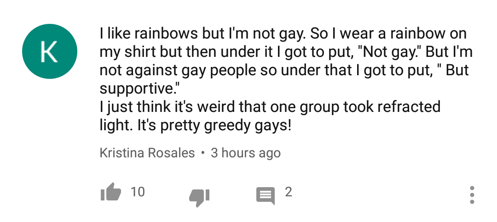

argumate:
kontextmaschine:
I think one of my biggest realizations out of our country’s latter-day tensions is there’s a black nation in the United States, amalgamated from separate origins like the American/white one was assembled from Scottish, French, English, later Italian etc.
Which is a change from my 90s End of History model of like, an ill-treated subculture within the same people as me, or even my later one as the latest wave of immigrants from rural feudalism, dating to the Great Migration
That makes some things make sense - MLK as the consensus like, president of the black nation, and that Al Frankton and Jesse Jackson’s occasionally farcical insertion of themselves into every “black issue”, everywhere, was a competition to succeed him
Segregation, the whole water fountains thing, goes from a blatant insult to a surreal China Mieville attempt to maintain two states for the nations - a white bourgeois metropole and a South American extractive colony - in the same place, which is destabilizing because I was never trained into a moral sense that Havana should by right have as nice facilities as Boston or anything
It explains a lot of what’s happened since Obama got elected. I see a lot of black writers now gawping that white people (like me) expected the Obama election to be a final resolution of racial tensions and not like, the opening of some sort of settlement process. Because they saw it as the black nation getting its deserved seat at the table of US government, AT LAST
But yeah, speaking for myself and the other whites, yeah, we saw it on the model of (Catholic) JFK being elected as a sign of a new golden age where the “white ethnics” became white together, and black people would be White now - maybe we’d make something up like “Judeo-Christian” or “Abrahamic”, maybe we’d just leave it there for comics to get easy dunks on.
That’s what all those well-meaning years were for, right? Of giving to the United Negro College Fund ads on football, and euphemizing inner-city crime as multicultural graffiti gangs on the shows you train your kids on, or ESPN commercials where multicultural office friends come together around The Game, or the reconciliation ministries at megachurches that are ESPN At Prayer
(huh, broadcast sports. that’s why the NFL stung and Huffy Young Man Journalism swapping MLB for NBA matters)
so what was it for, then?
thankfully online dating will solve it.
Truly and wisely has it been said: the answer to our social problems will surely lie in reaching out to all these unattached or underattached black women, the ones who can’t find good men because of incarceration rates / poverty / social trouble / what-have-you, and convincing them to get together with lonely white programmer nerds.
bambamramfan:
balioc:
How many “large-scale,” “structural” complaints actually amount to: it’s hard to get people to see me the way I wish they would see me?
I’m not sneering at that. It’s one of the realest emotional pains that humans experience, and finding a way to alleviate it at scale is one of the major components of any utopian project. But: trying to push your narrative by using cultural coercion to destroy competing narratives is never, ever, ever going to work. You will kill everyone in the world with psychic toxoplasma long before you get that kind of mental power over the people who are hurting you. You need a better strategy.
First point true. The second point… the hell you can. You might destroy way more than it’s worth on the way, but you can’t tell me gay people haven’t made enormous strides, since 2000 alone, by basically bullying people into saying you can’t look down on them.
This is, I think, a misreading of the situation.
There are lots of things you can achieve through bullying, particularly tangible concrete things on the political front. The gay-rights movement (which became the LGBTetc. movement) did a lot of that, much like the civil rights movement before it, and got excellent results.
The gay-rights/LGBTetc. movement also did a lot of actual good hearts-and-minds work in terms of getting its members portrayed sympathetically in media, pushing for a particularly-palatable agenda, etc. (Also, consciousness-raising worked better for them than it could possibly work for almost anyone, since “remember that these people exist and they’re sad if you’re mean to them” has a lot more punch when lots of people have kids who randomly turn out to be these people.)
These were not the same, even though to some large extent they happened at the same time. And I think that, in fact, all the “you’re a horrible bigot if you’re not with us on this” stuff did a lot to cement anti-LGBTetc. prejudice in places where it wouldn’t otherwise have stuck.
marcusseldon:
collapsedsquid:
It was not meant to be this way. In the 1980s Margaret Thatcher and her
allies championed what they called “popular capitalism”. According to
this theory, voters would be given a permanent stake in the market
through the sale of council housing and shares in privatised utilities.
And, for a period, it worked. The sale of more than a million council
homes helped transform Labour voters into Tory loyalists. In 1984,
shares in the privatised BT were 10 times oversubscribed, gifted a
windfall to the government and voters. The sale of British Gas
(exemplified by the populist “Tell Sid” campaign), British Airways and
the water companies followed. By the end of the 1980s, share ownership
among the public had risen from seven per cent to a quarter.
The revenue from privatised assets, and the North Sea oil boom,
underwrote Thatcherism as unemployment spiked, and funded costly income
tax cuts. But these unique circumstances cannot be repeated. As
left-wingers have taken to remarking, the problem with Thatcherism is that eventually you run out of other people’s assets.
Ok, this is a common narrative in both Britain and in the US about Republicans, and it is definitely true, there is an intellectual exhaustion and a lack of anything positive to sell from conservatives on both sides of the Atlantic. The public is more skeptical of unfettered capitalism and increasingly feels like the marketplace doesn’t work for them. The low hanging policy fruit for conservatives has been picked. This narrative has been true for at least ten years now.
But what I’m confused by is this: you’d think the left would have decisively taken power in a durable way given this. And yet, in both the US and UK, the right has managed to hang onto power, and the left parties are merely competitive at best. In the UK, Labor still lags slightly behind conservatives albeit somewhat less so than one might expect. In the US, Democrats look like they’ll make gains, but the polling leads haven’t been large enough or durable enough to guaranteed that they’ll win any real power back in either 2018 or 2020, at least from our present vantage point. This despite our current president being someone that a consistent majority of people disapprove of.
Why isn’t the left more successful? Why aren’t we at the start of a generation of left party dominance as was seen in the mid-20th century?
Abstract meta-level answer: there is never going to be a long-lasting stable period of one-party electoral dominance in a first-past-the-post system unless something extremely abnormal is going on. The second party will reconfigure itself however it has to in order to be an attractive alternative to ~50% of the voters – you’re not just going to get a rump minority throwing away its votes indefinitely. And, indeed, both major parties have substantially reconfigured themselves several times in living memory.
Concrete object-level answer: the right’s been trying to stoke a culture war since the mid-’90s, in the mid-’00s the left finally forgot the lessons of the late ‘60s and took the bait, and until that winds down it doesn’t really matter what policy positions get taken or what scandals come into view. So long as polarized politics invade the entirety of public memespace, so long as everyone knows that the Enemy Tribe is basically Satan, neither party is going to be able to grab a large enough share of the electorate for even a mayfly mandate.
How many “large-scale,” “structural” complaints actually amount to: it’s hard to get people to see me the way I wish they would see me?
I’m not sneering at that. It’s one of the realest emotional pains that humans experience, and finding a way to alleviate it at scale is one of the major components of any utopian project. But: trying to push your narrative by using cultural coercion to destroy competing narratives is never, ever, ever going to work. You will kill everyone in the world with psychic toxoplasma long before you get that kind of mental power over the people who are hurting you. You need a better strategy.
True imperial monarchy has never been tried.
Sorry, having a hard time processing: what do you mean by “generally
recognized cultural macrogroup with thick boundaries?” I think an
example would really help me be clear on this.
Any group whose is existence is culturally explicit, whose membership boundaries are reasonably clear, and whose culture is sufficiently all-pervasive that exogamy would be weird or stigmatized for any member. Races, ethnicities, and religions are all likely candidates; at least in America, “college-educated people” is another.
Point being, it’s pretty likely that someone of Fourth Quintile Hotness is together with someone else of Fourth Quintile Hotness – as compared to random distribution – but it’s probably much more likely that a white person is together with a white person, or that a college grad is together with a college grad.
Exactly which categories matter in this way depends on where you are. Hutu ancestry versus Tutsi ancestry has never been even slightly relevant in the US, but, uh…
saamdaamdandaurbhed:
balioc:
In the category of “things that are probably very obvious and well-established, but that I didn’t figure out until just now” –
The conventional wisdom suggests that physical attractiveness plays such a huge role in romantic / sexual selection, especially for men-selecting-women, because the people making the selections really care a lot about it relative to other possible priorities. But it seems very likely that, in large part, it carries so much weight because it’s easy to gauge accurately and quickly.
This is probably true even if you’re talking strictly about private internal prioritization. It doesn’t matter how much you really want a Nice Girl with a Good Personality if you can’t tell what a given girl’s personality is like. And, sure, that’s the sort of thing you’re going to figure out eventually, but it really is genuinely hard to separate the signal from the noise on the first date, let alone in the first minute. People put a lot of effort into making good first impressions, which translates to “sending deceitful signals about what they’re like” – often they’re not even doing it consciously, it’s a natural part of human interaction. You certainly can’t tell early on how someone is going to react to a variety of uncommon-but-important stressors. But you can certainly tell whether she seems hot. Makeup and flattering clothing etc. do serve as signal-jammers here, but they’re honestly not very good ones, not compared to our social-chameleon powers.
The phenomenon takes on a lot more salience, though, when you start thinking of your mate as a status symbol. Which is, of course, a big part of how many people approach the world. However they might posture, it’s not that the guys at the office don’t understand or appreciate the virtues of a good personality – but you nonetheless can’t usefully brag about your girlfriend’s excellent personality, because it’s basically impossible to verify.
I’m still sorting out the way this plays out with the traits that women stereotypically find important in their male romantic / sexual partners, but I’m pretty sure it’ll be feasible to draw close parallels.
[Exploring the parallels between this stuff and hiring practices is left as an exercise for the reader.]
This theorising is all well and good, but: it’s not so much that physical attractiveness plays a large role in romanticking as culturally we are told that it does. As evidence, I present most people.
This, of course, intimately related to the completely correct analysis of why a good-looking partner is a status symbol.
With the caveat: it’s actually a good thing to have if you want a large cross-section of romantic entanglements to choose from, since more good looks = less effort to get things going.
As evidence, I present most people.
I certainly don’t have data to hand, but my understanding (from papers I remember reading) is that
(a) People-in-general form couples that are much more well-correlated on the axis of physical attractiveness than on any other axis*, which suggests that practically they’re heavily invested in getting the most attractive partners they can rather than optimizing for anything else; and
(b) The major exception to the above involves people who are noticeable high-performing outliers on some widely-valued axis, such as wealth; these people reliably have partners who are extremely physically attractive, but do not have partners who are reliably extremely smart or nice or whatever.
* Discounting “shared membership in a generally-recognized cultural macrogroup with thick boundaries.” This clause is doing more and more work as time goes on.
…I’ve been doing a lot of annoyed ranty posting lately, and in consequence I have not been nearly serious enough about remembering one of my own discursive principles.
Different people are actually different. Don’t forget it.
Mea culpa.
In the category of “things that are probably very obvious and well-established, but that I didn’t figure out until just now” –
The conventional wisdom suggests that physical attractiveness plays such a huge role in romantic / sexual selection, especially for men-selecting-women, because the people making the selections really care a lot about it relative to other possible priorities. But it seems very likely that, in large part, it carries so much weight because it’s easy to gauge accurately and quickly.
This is probably true even if you’re talking strictly about private internal prioritization. It doesn’t matter how much you really want a Nice Girl with a Good Personality if you can’t tell what a given girl’s personality is like. And, sure, that’s the sort of thing you’re going to figure out eventually, but it really is genuinely hard to separate the signal from the noise on the first date, let alone in the first minute. People put a lot of effort into making good first impressions, which translates to “sending deceitful signals about what they’re like” – often they’re not even doing it consciously, it’s a natural part of human interaction. You certainly can’t tell early on how someone is going to react to a variety of uncommon-but-important stressors. But you can certainly tell whether she seems hot. Makeup and flattering clothing etc. do serve as signal-jammers here, but they’re honestly not very good ones, not compared to our social-chameleon powers.
The phenomenon takes on a lot more salience, though, when you start thinking of your mate as a status symbol. Which is, of course, a big part of how many people approach the world. However they might posture, it’s not that the guys at the office don’t understand or appreciate the virtues of a good personality – but you nonetheless can’t usefully brag about your girlfriend’s excellent personality, because it’s basically impossible to verify.
I’m still sorting out the way this plays out with the traits that women stereotypically find important in their male romantic / sexual partners, but I’m pretty sure it’ll be feasible to draw close parallels.
[Exploring the parallels between this stuff and hiring practices is left as an exercise for the reader.]
rustingbridges:
balioc:
rustingbridges:
balioc:
If you’re an American living in a modern urban or high-suburban atomized environment, then the closest thing you’ll ever experience to an actual tightly-knit chthonic community is probably…high school. That’s what things look like, when you have a bunch of randomly-selected people bound to each other for years on end. You have a world completely dominated by small-scale social politics.
Do you want that? Are you sure?
Hint: if you feel sad and alone and low-status, think about what it would be like for a lot of people who knew you personally to be invested in keeping you that way. Say what you want about the atomized hordes on the other side of the computer screen, it’s not that hard to blow them off. Finding sympathetic souls is a genuine trial, I wish to God that it were easier, but…things could be so much worse.
(In fairness, some of high school’s weirdness comes from the fact that there are no real stakes to anything, apart from academic success, for anyone. Obviously, in a more “normal” tight-knit chthonic society, lots of things have real stakes. In some ways that’s a real improvement. In other ways it’s pure horror fuel.)
So I think a better parallel to what people are imagining is university? Modestly selected people bound together for some purpose with high exit costs and substantial autonomy, but still significant default community.
But if your counterexample to people saying they want tighter knit communities is to say, you have no idea what you want, remember that part of your life where you sure you had to deal with a bunch of random bullshit, but you hung out with a bunch of close life long friends, among other more casual but friendly acquaintances, every day without having to put any effort into coordination, imagine something like that.
Well, give me some exit rights, meaningful work instead of busy work, and then yeah I’d like to see my best friends casually every day without trying.
University communities are great. The best communities I’ve ever seen came out of university settings, one way or another. (There were also a whole lot of terrible ones, but, well, Sturgeon’s Law.)
And seeing your best friends a lot is incredibly great. Far too few people make that a priority, at least in my approximate demographic / culture / whatever, and it causes a lot of misery.
But selection matters, and the availability of exit matters too. And the people bemoaning atomization aren’t saying “choose your friends wisely and bond to them closely” – they’re pushing for a return to the days of villages and powerful families, the days when you were born into an obligate network of relationships.
Which can seem tempting, I imagine, when finding good connections seems really hard (which it often is!) and the myths are telling you that you could just have those things handed to you.
So I’m saying – if you liked high school, if the tradeoffs there actually seemed worth it to you while you were experiencing them, then maybe the standard anti-atomization position actually makes sense. Otherwise you’d be wise to keep looking.
Some thoughts, not really in any order:
1) It’s not that I don’t want to see my best friends often. It’s that we’ve been scattered across the world by the whirlwind of economic modernity. And this has its upsides, I’m not denying that, I have much more material wealth than I would have without it. And yeah, I make new friends wherever I go, but it takes years to form relationships like that.
2) There’s a sliding scale of atomization vs community - the people I see advocating togetherness are mostly pushing for things closer to the university model. Nobody wants no exit rights, they just want actual commitment.
3) Myths aren’t telling me you can just have good connections handed to you, they were. I’ve known some of my friends for literally longer than I can remember, and I know what they would do for me because they have. And yes, selection matters. I grew up in a place with disproportionately the sort of people I could get along with. The pro community claim is that this is not pure chance (my parents certainly didn’t believe it was).
4) I think there’s a reasonable argument that many of the bad parts of high school are from the one size fits all, atomizing, governance from on high model that modern schools take. When I think of the bad parts I think of the faceless bureaucracy pointlessly asserting control, the effects of which were blunted only because of the personal relationships with authority figures who knew me.
5) As much as I think we’ve got too little community these days, I’m in the end an individualist, you won’t find me arguing for the rights of elders or patriarchs. But I think it’s important that I learned that it was right to resist authority not from the greater atomized culture but from my family. It’s not a particularly voluntary institution, and I think exit rights should be available, but I’d be careful not to throw the baby out with the bathwater.
…to be clear, these are good thoughts, I’m glad this conversation is happening.
1) This is at least in part a matter of prioritization. “How much opportunity are you willing to sacrifice in the name of living close to your [chosen] friends?” is an actual question, one that is being hashed out at great length by my real-life social circle, and the fact that this is often treated as not-even-a-thing-to-be-considered has a lot to do with the way that atomization has shaken out thus far.
2) Yeah, no, I assure you, it’s not hard to find people explaining how social exit rights are destroying civilization.
3) It can indeed happen, if you’re lucky. I’m even willing to buy “cthonic communities are better selectors-for-compatibility than literal pure randomness.” But the village model reliably fails for a lot of people and doesn’t have safety valves. And a lot of people don’t want it to have safety valves, because, e.g., “my kids up and leave town and I never see them” is a thought that makes them very upset.
4) Those things are bad, saliently so, but you can also find them in lots of faceless authoritarian institutions to which adults are subject. High school is so often peculiarly horrible, at least in part, because all the inmates are trapped in a Dunbar-sized community that is inevitably dominated by local politics and status hierarchies. Opting out of the social nightmare is, usually, as impossible as opting out of the actual schooling part – you won’t be left alone no matter how much you want it. I sure wasn’t, and Lord knows I tried.
5) I don’t think there’s real disagreement here, at least not explicitly…but, yes, families can sure teach people a lot of great things. Often they do this even when they are generally intolerable. (Same goes for schools, jobs, and even prisons.)
I can’t believe that I’m the one who has to be saying this to Christian tradcons, but…
Yes, it’s true. Once upon a time, especially in certain heavily-Catholic premodern societies, there were various high-prestige social roles for men that were associated with celibacy and virginity. Maybe that was a good thing, maybe not; that’s an argument for another time.
But even if that social technology were in widespread use, and even if in fact it proved to be immensely beneficial overall, it would not do anything to help most of the current crop of sad lonely men who are bemoaning their lack of romantic/sexual success.
Western culture has never particularly celebrated celibacy or virginity in men, on their own merits. Quite the reverse, mostly. It has, in some times and places, celebrated priesthood and monasticism, which incorporate celibacy as part of the package. But being lonely and sad and bitter is not a qualification for holy orders. If you claim to take this seriously, then you should understand that a priest is supposed to have a calling – and even if you don’t really take it seriously, even if you’re treating it as culture-engineering mumbo jumbo, you should understand that ordination is only going to be helpful for someone who actually wants the role and the duties of a priest. It’s not a functional consolation prize.
That said, “come up with a viable consolation prize for lonely sad sexually-unsuccessful men that can be implemented at scale” is certainly an interesting culture-engineering challenge.
The best I can come up with, on very short notice, is something like George R.R. Martin’s Night’s Watch. “We all understand that you’re unwanted bottom-of-the-barrel human slime. We’re going to send you off to live in a mostly-isolated community with similarly-situated guys, so that you can form your own social structures without being constantly reminded of your failures, like Australia or something…but instead of just cutting you loose, we’ll have you doing something useful that can engender pride, and we’ll provide you with enough small luxuries and prostitutes to make the social privation seem a bit less awful.”
I’m pretty sure we could actually do a lot better than that, though.
mitigatedchaos:
balioc:
rustingbridges:
balioc:
If you’re an American living in a modern urban or high-suburban atomized environment, then the closest thing you’ll ever experience to an actual tightly-knit chthonic community is probably…high school. That’s what things look like, when you have a bunch of randomly-selected people bound to each other for years on end. You have a world completely dominated by small-scale social politics.
Do you want that? Are you sure?
Hint: if you feel sad and alone and low-status, think about what it would be like for a lot of people who knew you personally to be invested in keeping you that way. Say what you want about the atomized hordes on the other side of the computer screen, it’s not that hard to blow them off. Finding sympathetic souls is a genuine trial, I wish to God that it were easier, but…things could be so much worse.
(In fairness, some of high school’s weirdness comes from the fact that there are no real stakes to anything, apart from academic success, for anyone. Obviously, in a more “normal” tight-knit chthonic society, lots of things have real stakes. In some ways that’s a real improvement. In other ways it’s pure horror fuel.)
So I think a better parallel to what people are imagining is university? Modestly selected people bound together for some purpose with high exit costs and substantial autonomy, but still significant default community.
But if your counterexample to people saying they want tighter knit communities is to say, you have no idea what you want, remember that part of your life where you sure you had to deal with a bunch of random bullshit, but you hung out with a bunch of close life long friends, among other more casual but friendly acquaintances, every day without having to put any effort into coordination, imagine something like that.
Well, give me some exit rights, meaningful work instead of busy work, and then yeah I’d like to see my best friends casually every day without trying.
University communities are great. The best communities I’ve ever seen came out of university settings, one way or another. (There were also a whole lot of terrible ones, but, well, Sturgeon’s Law.)
And seeing your best friends a lot is incredibly great. Far too few people make that a priority, at least in my approximate demographic / culture / whatever, and it causes a lot of misery.
But selection matters, and the availability of exit matters too. And the people bemoaning atomization aren’t saying “choose your friends wisely and bond to them closely” – they’re pushing for a return to the days of villages and powerful families, the days when you were born into an obligate network of relationships.
Which can seem tempting, I imagine, when finding good connections seems really hard (which it often is!) and the myths are telling you that you could just have those things handed to you.
So I’m saying – if you liked high school, if the tradeoffs there actually seemed worth it to you while you were experiencing them, then maybe the standard anti-atomization position actually makes sense. Otherwise you’d be wise to keep looking.
The point of the One Thousand Villages series of posts was actually to create cities that consist of tiling university campuses.
Notably, if you lived in one of them and didn’t like it, you could just move to another one. So if you were counting me under hardcore anti-atomization or something, you might want to recalibrate.
(On the other and, I’m MitigatedChaos, so I may not be highly representative of the broader group.)
Your positions, as I understand them, are not even close to the concept cluster at which I’m trying to gesture.
rustingbridges:
balioc:
If you’re an American living in a modern urban or high-suburban atomized environment, then the closest thing you’ll ever experience to an actual tightly-knit chthonic community is probably…high school. That’s what things look like, when you have a bunch of randomly-selected people bound to each other for years on end. You have a world completely dominated by small-scale social politics.
Do you want that? Are you sure?
Hint: if you feel sad and alone and low-status, think about what it would be like for a lot of people who knew you personally to be invested in keeping you that way. Say what you want about the atomized hordes on the other side of the computer screen, it’s not that hard to blow them off. Finding sympathetic souls is a genuine trial, I wish to God that it were easier, but…things could be so much worse.
(In fairness, some of high school’s weirdness comes from the fact that there are no real stakes to anything, apart from academic success, for anyone. Obviously, in a more “normal” tight-knit chthonic society, lots of things have real stakes. In some ways that’s a real improvement. In other ways it’s pure horror fuel.)
So I think a better parallel to what people are imagining is university? Modestly selected people bound together for some purpose with high exit costs and substantial autonomy, but still significant default community.
But if your counterexample to people saying they want tighter knit communities is to say, you have no idea what you want, remember that part of your life where you sure you had to deal with a bunch of random bullshit, but you hung out with a bunch of close life long friends, among other more casual but friendly acquaintances, every day without having to put any effort into coordination, imagine something like that.
Well, give me some exit rights, meaningful work instead of busy work, and then yeah I’d like to see my best friends casually every day without trying.
University communities are great. The best communities I’ve ever seen came out of university settings, one way or another. (There were also a whole lot of terrible ones, but, well, Sturgeon’s Law.)
And seeing your best friends a lot is incredibly great. Far too few people make that a priority, at least in my approximate demographic / culture / whatever, and it causes a lot of misery.
But selection matters, and the availability of exit matters too. And the people bemoaning atomization aren’t saying “choose your friends wisely and bond to them closely” – they’re pushing for a return to the days of villages and powerful families, the days when you were born into an obligate network of relationships.
Which can seem tempting, I imagine, when finding good connections seems really hard (which it often is!) and the myths are telling you that you could just have those things handed to you.
So I’m saying – if you liked high school, if the tradeoffs there actually seemed worth it to you while you were experiencing them, then maybe the standard anti-atomization position actually makes sense. Otherwise you’d be wise to keep looking.
If you’re an American living in a modern urban or high-suburban atomized environment, then the closest thing you’ll ever experience to an actual tightly-knit chthonic community is probably…high school. That’s what things look like, when you have a bunch of randomly-selected people bound to each other for years on end. You have a world completely dominated by small-scale social politics.
Do you want that? Are you sure?
Hint: if you feel sad and alone and low-status, think about what it would be like for a lot of people who knew you personally to be invested in keeping you that way. Say what you want about the atomized hordes on the other side of the computer screen, it’s not that hard to blow them off. Finding sympathetic souls is a genuine trial, I wish to God that it were easier, but…things could be so much worse.
(In fairness, some of high school’s weirdness comes from the fact that there are no real stakes to anything, apart from academic success, for anyone. Obviously, in a more “normal” tight-knit chthonic society, lots of things have real stakes. In some ways that’s a real improvement. In other ways it’s pure horror fuel.)
the-grey-tribe:
balioc:
archonofquandaries:
balioc:
It’s well-understood by now that Neon Genesis Evangelion represented (at least in part) Hideaki Anno’s attempt to attack his fanbase…to call out the otaku for being immature, fetishistic, delusional, whatever…and that all the widespread full-hearted love and enthusiasm for the series, especially within the hardcore otaku community, represented a sort of artistic backfire.
But this should not be understood as an outgrowth of the fans being “too dense to get it,” or some such thing. The fans knew what they were seeing. Their joy was an inevitable, necessary outcome of that kind of story being told very well. Anno may not have understood what he was actually doing, for all I know, but he did it, it’s right there in the text.
Which is to say –
The alleged point of the story is: “Look what would happen if a sad-sack fuck-up like you were actually put in the role of the world-saving hero! You’d be wretched, you’d be horrible, you’d spill your mental problems all over everything, you’d be pining after screwed-up love interests whom you couldn’t possibly understand, it wouldn’t look the slightest bit like a heroic power fantasy.” And this is in fact one layer of the narrative, one possible way to process the data.
But the actual point of the story is: “Look, we know exactly how much of a sad-sack fuck-up you are. We know that you’re wretched, that you’re horrible, that you spill your mental problems all over everything, that you pine after screwed-up love interests whom you can’t possibly understand, that you don’t know how to exist without it feeling like a horrorshow. And despite all that, we can tell a story about you – yes, you, with all your disgusting secret troubles, not any of the more-appealing smoothed-out avatars that you sometimes try to pretend to be – in which you pilot a giant robot, and you save the world, and all the petty details of your internal fuck-up-ed-ness actually matter in the broader scheme of things.”
How could you think the otaku were not going to lap that up with a spoon?
There is an important general-purpose lesson to be learned here. Articulating that lesson will have to wait for another day.
Hey, that’s the Hastur-thing, right? The reason why you’d worship him? To be the star of a tragedy whose ending is fundamentally rooted in why your flaws matter?
Partly that.
Partly the much-simpler “hey, this show is providing me with a fantasy where I pilot the giant robot and kick ass and hang around with several variously-archetypical hotties who are clearly obsessed with me, all without having to look or behave like someone other than myself.”
Maybe @balioc should re-watch the contemporary mecha anime Gundam Wing to understand why Eva was such a leap forward compared to what came before.
…admittedly I haven’t seen Wing – or any Gundam other than SeeD, plus bits and pieces of the original Mobile Suit Gundam – and if you tell me there’s some particular insight to be gained there, I’ll believe it.
But I’ve certainly seen plenty of pre-EVA mecha anime. And, yes, it represents a big improvement in a variety of normal-ish “this is what an improvement in the genre should look like” sorts of ways, which had a lot to do with its popularity and sticking power.
Nonetheless. EVA is discernibly hostile to its audience. It goes out of its way to be unpleasant in a wide variety of ways (something that the public sure didn’t fail to notice). And unpacking its success, in the face of that, is going to involve working with something beyond “it was just generally better and deeper.”
archonofquandaries:
balioc:
It’s well-understood by now that Neon Genesis Evangelion represented (at least in part) Hideaki Anno’s attempt to attack his fanbase…to call out the otaku for being immature, fetishistic, delusional, whatever…and that all the widespread full-hearted love and enthusiasm for the series, especially within the hardcore otaku community, represented a sort of artistic backfire.
But this should not be understood as an outgrowth of the fans being “too dense to get it,” or some such thing. The fans knew what they were seeing. Their joy was an inevitable, necessary outcome of that kind of story being told very well. Anno may not have understood what he was actually doing, for all I know, but he did it, it’s right there in the text.
Which is to say –
The alleged point of the story is: “Look what would happen if a sad-sack fuck-up like you were actually put in the role of the world-saving hero! You’d be wretched, you’d be horrible, you’d spill your mental problems all over everything, you’d be pining after screwed-up love interests whom you couldn’t possibly understand, it wouldn’t look the slightest bit like a heroic power fantasy.” And this is in fact one layer of the narrative, one possible way to process the data.
But the actual point of the story is: “Look, we know exactly how much of a sad-sack fuck-up you are. We know that you’re wretched, that you’re horrible, that you spill your mental problems all over everything, that you pine after screwed-up love interests whom you can’t possibly understand, that you don’t know how to exist without it feeling like a horrorshow. And despite all that, we can tell a story about you – yes, you, with all your disgusting secret troubles, not any of the more-appealing smoothed-out avatars that you sometimes try to pretend to be – in which you pilot a giant robot, and you save the world, and all the petty details of your internal fuck-up-ed-ness actually matter in the broader scheme of things.”
How could you think the otaku were not going to lap that up with a spoon?
There is an important general-purpose lesson to be learned here. Articulating that lesson will have to wait for another day.
Hey, that’s the Hastur-thing, right? The reason why you’d worship him? To be the star of a tragedy whose ending is fundamentally rooted in why your flaws matter?
Partly that.
Partly the much-simpler “hey, this show is providing me with a fantasy where I pilot the giant robot and kick ass and hang around with several variously-archetypical hotties who are clearly obsessed with me, all without having to look or behave like someone other than myself.”
OK, I’ve seen enough examples now that it’s worth briefly talking about the phenomenon as a whole –
Like most everyone else here, I’m sure, I’m very invested in the wide world of People Having Interesting High-Level Things to Say On the Internet. In many ways, on a valuable-insight-per-minute basis, it’s a better place to be than the world of Actual Published Authors. But it does have serious endemic flaws of its own.
One of them, which I’m just starting to be able to understand as its own recurring type, is
the author with important ideas to express, but who refuses to express them in a way that his readers are actually going to be able to understand and process, because he wants to stay on brand or because he’s more interested in venting his emotions than in communicating
Identifying plumage here includes the repetition of stock phrases in a conversation/explanation well past the point where they obviously aren’t sinking in, and through the refusal to treat questions/criticisms as being generated in good faith, instead using them as fuel for yet more on-brand analysis.
If you think this might be you –
– well, if you want to do that, if you’re satisfied with your priorities, then you do you, I guess. It’s your platform. But you’re ensuring that it’s actually pretty difficult for people to go through your writing and figure out how to absorb / come to terms with your good ideas, even if they are actively invested in doing that thing, and you’re also ensuring that many otherwise-persuadable readers are going to be frustrated and hostile.
King Ghidorah and the Woman Clothed in Sun
It’s well-understood by now that Neon Genesis Evangelion represented (at least in part) Hideaki Anno’s attempt to attack his fanbase…to call out the otaku for being immature, fetishistic, delusional, whatever…and that all the widespread full-hearted love and enthusiasm for the series, especially within the hardcore otaku community, represented a sort of artistic backfire.
But this should not be understood as an outgrowth of the fans being “too dense to get it,” or some such thing. The fans knew what they were seeing. Their joy was an inevitable, necessary outcome of that kind of story being told very well. Anno may not have understood what he was actually doing, for all I know, but he did it, it’s right there in the text.
Which is to say –
The alleged point of the story is: “Look what would happen if a sad-sack fuck-up like you were actually put in the role of the world-saving hero! You’d be wretched, you’d be horrible, you’d spill your mental problems all over everything, you’d be pining after screwed-up love interests whom you couldn’t possibly understand, it wouldn’t look the slightest bit like a heroic power fantasy.” And this is in fact one layer of the narrative, one possible way to process the data.
But the actual point of the story is: “Look, we know exactly how much of a sad-sack fuck-up you are. We know that you’re wretched, that you’re horrible, that you spill your mental problems all over everything, that you pine after screwed-up love interests whom you can’t possibly understand, that you don’t know how to exist without it feeling like a horrorshow. And despite all that, we can tell a story about you – yes, you, with all your disgusting secret troubles, not any of the more-appealing smoothed-out avatars that you sometimes try to pretend to be – in which you pilot a giant robot, and you save the world, and all the petty details of your internal fuck-up-ed-ness actually matter in the broader scheme of things.”
How could you think the otaku were not going to lap that up with a spoon?
There is an important general-purpose lesson to be learned here. Articulating that lesson will have to wait for another day.
norsecoyote:
balioc:
epistemic status: scattered half-baked thoughts, probably they should wait until I’ve sorted them out and can put them in a real essay, but screw that I want to get them down before I forget
Civilization is neoteny. Necessarily and wholly.
We’re all familiar with the thing where a domesticated species, by virtue of being domesticated, becomes neotenous in the literal sense – adults start retaining some of the physiology and the behaviors associated with juveniles of their species. There are reasons for that. The big one is that, throughout its lifetime, a domesticated animal is occupying something like the niche that an infant wild animal occupies: it’s not sustaining itself by doing normal wild-animal things (hunting / evading predators / whatever), it’s sustaining itself by causing larger and more powerful creatures to want to take care of it.
Once your society has moved past hunting-and-gathering or subsistence agriculture, once you’re actually part of a network of specialists and supply chains, you are no longer living like a “wild” human. Your thriving depends on (1) your obedience to elites and their armed goons [which is true even if you are an elite or an armed goon], (2) your ability to do helpful “chores” assigned to you by other humans, and (3) your ability to be likeable and charming. These are kid skills. Even abstract symbolic thinking is kind of a kid skill if you look at it the right way, which may or may not correspond to actual evo-neurological reality; you’re not using your skills to manage the dangers and opportunities of the environment in the way that a masterful hunter does, you’re playing with toys and/or trying out different kinds of imitation and/or trying to understand things for which you don’t really have concepts. And if your ability to perform kid skills determines your reproductive fitness, well…
Noteworthily: there are lots of different kid skills, especially given that human childhood contains many distinct stages. One of those skills is the ability to display maturity. If a child can act scary and tough and independent like a “wild human” adult, he can bully younger children, and often impress adults enough to be offered privileges and opportunities.
This means that putting up a non-neotenous front is not even slightly incompatible with an actually-neotenous nature.
This is a useful framework for understanding and planning out the future. What our organization and technology does is make us more dependent, and make us better-suited to being dependent. Maybe that strikes you as awful, which is a good reason to be a primitivist. Maybe it’s worth thinking about ways to mitigate it. Maybe there are useful things to be gained by leaning into it. But the facts are what they are (in theory).
I really feel that this is much more an interesting metaphor than anything close to actually describing what is happening – while the opening claim is undoubtedly provocative, as phrased it’s just not true.
My big red flag was the bit:
Even abstract symbolic thinking is kind of a kid skill if you look at it the right way, which may or may not correspond to actual evo-neurological reality
Which, as I’m sure you know, definitely has an almost completely negative correspondence. Abstract reasoning is (in, let’s say, neurotypical humans) basically the very last skill to develop, and usually arrives around the mid-to-late teenage years, aka when (from a biological standpoint) humans become adults. I get what you’re saying about how modern humans “use it differently,” akin to play, but how certain are you that that’s really different? Most problems directly concerned with “survival in the wild” do not actually require abstract reasoning to solve, vs. memory and pattern-recognition.
Moreover, what about other great apes with distinct, human-like social structures? Chimpanzee and gorilla troops are famous for the elaborate social games/wars that go on inside them, parallel to actual questions of survival – would your claim extend to say that they are also neotenized? To me, that seems far less neat a fit.
Abstract reasoning is (in, let’s say, neurotypical humans) basically the very last skill
to develop, and usually arrives around the mid-to-late teenage years,
aka when (from a biological standpoint) humans become adults. I get what
you’re saying about how modern humans “use it differently,” akin to
play, but how certain are you that that’s really different?
You know more about dogs than I do, I’m sure, but…my impression is that adult dogs are generally better at responding to commands, and playing with humans in complex ways, than puppies are. It remains true that answering to commands and play are both neotenous behavior in dogs, and that adult wolves do not do those things basically at all.
Moreover, what about other great apes with distinct, human-like social
structures? Chimpanzee and gorilla troops are famous for the elaborate
social games/wars that go on inside them, parallel to actual questions
of survival – would your claim extend to say that they are also
neotenized?
It seems clear (to me) that “wild adult humans” are still tribal animals, and so some kinds of social stuff is going to fall into the wild-adult-human skillset. Coalition forming and the like. Damned if I know where that line gets drawn.
All that said, I don’t want to push this too hard. It’s basically brain noise at this stage. I’ll still hash it out and defend it, that’s how ideas get refined, but I’m not saying that I have any particular confidence in this one.
Re: "This means that putting up a non-neotenous front is not even slightly incompatible with an actually-neotenous nature." Okay, so what would it look like for this to even be a falsifiable hypothesis?
Oh, to be clear, none of this is even slightly close to being falsifiable at its current level of development. We’re still in Telling Interesting Campfire Stories territory here.
(I imagine that you could design experiments where you looked at relatively “uncivilized” peoples, to see how the behavior of their actual adults was different from the behavior of their kids-trying-to-act-adult, and then did some kind of comparison to different populations of more-“civilized” folk. But that is spitballing.)
The point is really just to forestall all the people who are obviously going to say (or at least think) “yes, neoteny is on the rise, it’s terrible, and the solution is definitely that culture should encourage people to be more like Cool Hard-Edged Adults such as myself.” Having a counter-neotenous aesthetic or morality doesn’t intrinsically make you any less childish, in a way that a four-year-old wearing his dad’s tie is not thereby rendered more genuinely adult in any way. That is a thing that would have to be established somehow.
epistemic status: scattered half-baked thoughts, probably they should wait until I’ve sorted them out and can put them in a real essay, but screw that I want to get them down before I forget
Civilization is neoteny. Necessarily and wholly.
We’re all familiar with the thing where a domesticated species, by virtue of being domesticated, becomes neotenous in the literal sense – adults start retaining some of the physiology and the behaviors associated with juveniles of their species. There are reasons for that. The big one is that, throughout its lifetime, a domesticated animal is occupying something like the niche that an infant wild animal occupies: it’s not sustaining itself by doing normal wild-animal things (hunting / evading predators / whatever), it’s sustaining itself by causing larger and more powerful creatures to want to take care of it.
Once your society has moved past hunting-and-gathering or subsistence agriculture, once you’re actually part of a network of specialists and supply chains, you are no longer living like a “wild” human. Your thriving depends on (1) your obedience to elites and their armed goons [which is true even if you are an elite or an armed goon], (2) your ability to do helpful “chores” assigned to you by other humans, and (3) your ability to be likeable and charming. These are kid skills. Even abstract symbolic thinking is kind of a kid skill if you look at it the right way, which may or may not correspond to actual evo-neurological reality; you’re not using your skills to manage the dangers and opportunities of the environment in the way that a masterful hunter does, you’re playing with toys and/or trying out different kinds of imitation and/or trying to understand things for which you don’t really have concepts. And if your ability to perform kid skills determines your reproductive fitness, well…
Noteworthily: there are lots of different kid skills, especially given that human childhood contains many distinct stages. One of those skills is the ability to display maturity. If a child can act scary and tough and independent like a “wild human” adult, he can bully younger children, and often impress adults enough to be offered privileges and opportunities.
This means that putting up a non-neotenous front is not even slightly incompatible with an actually-neotenous nature.
This is a useful framework for understanding and planning out the future. What our organization and technology does is make us more dependent, and make us better-suited to being dependent. Maybe that strikes you as awful, which is a good reason to be a primitivist. Maybe it’s worth thinking about ways to mitigate it. Maybe there are useful things to be gained by leaning into it. But the facts are what they are (in theory).
Please stop taking developments from the last ten-to-fifteen years and treating them like Eternal, Essential Features of Major Ideological Movements.
If things were different twenty or thirty years ago, let alone two or three centuries ago, that actually matters.
Side note on Thor
norsecoyote:
I was going to put this in my original post but forgot, but several years ago I read an blog post of the core themes of Thor – as in the character/comic, not the film, in fact this may have been before the film even came out – that was super-influential to my thinking and which for the life of me I cannot find again. So I’m going to summarize it here, and if anybody happens to recognize the source I would love to know.
The post was basically asking, what is the core story of Thor? Like, the core story of Superman is about exploring what moral obligations look like once feasibility is no longer a concern, the core story of the X-Men is about coping as an outsider with a racist/classist/etc. society, the core story of Batman is about the exercise of the will to manage neuroses/psychoses, Spider-man is – huh, it’s right on the tip of my tongue – but what’s the connective tissue of Thor? Why do we tell his stories? What are we meant to relate to in the saga of a pseudo-Norse strongman with a big hammer?
The answer the writer offered was that Thor stories are about never being good enough for your father, which is such a brilliant insight that it’s stuck with me for years. After all, Thor is one of the only superheroes who has a direct superior (in the authority sense, rather than the power-level) in either Marvel or DC, which means somewhat uniquely he’s not just following his own moral compass, often a defining characteristic of a hero. I haven’t read enough (really, any) of the classic Thor comic books to specifically confirm or deny, but it feels really right.
(This also, of course, explains why Loki in this setting has to be Thor’s brother and not his uncle.)
Anyway, the Thor film, for all its flaws, really does get that core theme and executes it well. The problem, as the original writer noted, is that unlike most other major heroes’ themes, Thor’s is really only aimed at a small subset of the population, i.e. boys in their adolescence through early adulthood. And sure, that demographic composes a huge percentage of comic book readers, but when it comes to major motion pictures, Thor just doesn’t have anywhere close to the universal relatability of the other heavy hitters.
This is, I think, a partial answer but not the complete answer. @bambamramfan is right: Thor is about worthiness, as a general abstract concept, about the idea that your moral value is judged and can be found wanting.
…which is to say, Odin is a big deal in those stories, but so is the fact that “can you pick up the stupid hammer?” is a major recurring question.
The affect heuristic is BAD. It is NOT GOOD. You should AVOID LETTING IT CORRUPT YOU.
Seriously, though, jokes aside –
One of the most useful mental-discipline techniques in the toolkit is “try as hard as you can to learn about something before you decide whether it’s good or bad.” I’ve found that a reasonable rule of thumb is “know at least four concrete things about the topic-at-hand before you start generating normative conclusions, and if you find yourself generating normative conclusions before that point, quash them ruthlessly and apply the operant-conditioning Failure Stick.”
Needless to say I do not always do this successfully. But when I do I’m generally very glad of it.
Never discount “I want the things I’m good at to be valued, important skills and drivers of status” as a motivating factor behind people’s core political and ethical impulses.
My feelings about the prospect of a jobs guarantee certainly aren’t unilaterally positive, especially if you’re comparing it to other provision-of-welfare schemes that can be imagined. But there’s one argument in its favor that, for whatever reason, I haven’t much been hearing –
This is a plausible way to fund a lot of public work that we should be funding anyway, but aren’t, because our political system is borked.
There’s a lot of stuff in that category. Our transit infrastructure is shitty and behind-the-times and poorly-maintained, and there are a lot of complex reasons for that, but much of it boils down to “the people in charge of making our transit infrastructure good can’t get the money to do so.” We could usefully build enormous amounts of housing, but at the moment there’s no one who wants to pay for that. The justice system is hideously slow and backlogged because we don’t have enough people to man it at any level, which includes high-education roles like “judge” and “public lawyer” but also includes normal-working-person roles like “forensic lab assistant”. Something something more elder care workers.
I realize that a lot of conservatives and libertarian-types are going to snort at the idea that our government doesn’t get its hands on enough money. But…our government isn’t a unified entity either horizontally or vertically, and whatever your priorities actually are, it’s easy to conclude that important things get starved while stupid useless things bloat.
There’s at least a reasonable possibility that, if we suddenly have this giant pool of people whom we need to be giving jobs anyway, we will have our shit together at least enough to have them do the things that we need doing.
…I kind of suspect that the failure to articulate this idea underlies some of the conflict regarding the question of “how terrible are government-guaranteed-jobs going to be?” If you’re imagining the average such job as, like, “construction worker fixing train lines” or “nursing home flunky,” you’re probably a lot more sanguine than if you’re imagining someone digging ditches and then filling them back in.
mailadreapta:
balioc:
mailadreapta:
tanadrin:
With risk of famine, less dietary variety, larger-scale warfare, and increased disease (especially in urban areas), the civilizations that sprang up after the transition to permanent cities and large-scale agriculture were a disaster for the physical health of the individual. It would be weird if they just so happened to perfectly fit the psychological health of the individual. I keep coming back to that description I once read of Renaissance Italy, where a songbird with broken wings was considered a perfectly appropriate toy for a small child, who would play with it until they crushed it to death. Even at what have been considered its historical peaks, our civilization has often been monstrous, in ways we have often tried to normalize in exactly the same way fucked up families try to normalize their own behavior.
Indeed, and in the case of nutrition we only really turned the corner in the second half of the 20th century. And we did so not by any particularly sophisticated understanding of nutrition, but by brute-force increase of the number of calories available until malnutrition was no longer a serious issue.
But the implication you’ve made above, that we have made similar progress on the problems of psychology, doesn’t seem to hold up. Available statistics suggest that modern living is worse psychologically than older lifestyles. To make a crude comparison, when it comes to mental health we are at best in the early 19th century, just barely beginning to understand how bad our situation is, with a bunch of remedies that barely work mingled heavily with nonsense and charlatanry.
(If playing with an injured bird is “monstrous”, then I don’t think there has ever been a non-monstrous society of any kind, at any stage of human history. Hunter-gatherers do three monstrous things before breakfast.)
Available statistics suggest that modern living is worse psychologically than older lifestyles.
I would be very interested in seeing these statistics. I would be particularly interested if
i. they seem in any way trustworthy in their data (e.g., not tabulating happiness based on self-reports);
ii. they seem to be using any understanding of human thriving that can be any way aligned with mine (e.g., not using “failing to make waves” as a signal of everything being fine); and
iii. they’re controlling for obvious widespread-but-nonstandard global-scale-transitional lifestyle stupidities (e.g., “I’m liberated from the social circle of the village where I was born, so I definitely don’t need any real friends at all!”). This last one may represent something of an unfair standard, in the sense that you can at least make an argument to the effect of “those allegedly-transitional stupidities are precisely the problem with modern lifestyles,” but…in fact transitions don’t last forever, the kinks in new social structures get worked out, and I’d bet money that this particular kind of problem-with-modernity just isn’t going to last all that long.
Because without that one sentence, I agree entirely with everything you’re saying here, and I don’t think it leads even a little bit to the kind of conclusion you support.
Yes! We are just barely beginning to have the infrastructure needed to think usefully about how to live well, in the way that early-19th-century doctors were just barely beginning to have the infrastructure needed to think usefully about how to keep us healthy. And, much like those doctors, we would be insane to look backwards for solutions. The past is a psychological hellpit. As you suggest, there has never been a non-monstrous society, not by any operationally-useful standard.
Certainly there’s no benefit to be gained in going back to the hunter-gatherer systems for which we evolved; evolution selects for niche-functionality but not for fulfillment or glory, and those systems were horrible by any measure we’d currently care to employ, as much so as Bronze Age agricultural life or Victorian life or whatever.
Figuring out how to build new systems from scratch is really really hard, and we’re going to screw up lots and lots, but there really isn’t a better plan.
IMPORTANT SIDEBAR, BECAUSE SOME PEOPLE ARE HOPELESSLY DENSE:
Just because past societies were terrible, on certain important axes, doesn’t mean that we’re not allowed to love and admire them for their many virtues.
Here’s two studies which suggest that the prevalence of depression is increasing over decadal timescales:
https://www.ncbi.nlm.nih.gov/pubmed/2648043
http://www-personal.umich.edu/~daneis/symposium/2012/readings/Twenge2010.pdf
Of course even the oldest one only goes back to the 1930’s, which is well into the period that we call “modern” and so doesn’t tell us much about the premodern world. The problem, as noted above, is that before that there’s so little data and such a wide gap in definitions that meaningful comparisons are almost impossible. Nonetheless, even an 80 year sample is sufficient to establish that there hasn’t been anything like the psychological equivalent of the discovery of penicillin or the Green Revolution.
Responding to the rest of your post, there’s only a few things I want to point out:
- Yes, new social structures take some time to pan out, but we’ve been in a state of ~continuous disruption~ for, oh, 200 years now? The point is, new social structures cannot settle into a stable state if the technological and economic conditions that support them get upended every few decades. Given that at least half of the problem is what you call “transitional stupidities”, it is actually a significant issue that new social arrangements are not actually allowed to reach stability before they get upended again. I unironically believe that we need a multi-generational plateau in technological progress if we hope to have any sort of stable social arrangements again. (Note: “stable” does not always equal “good”, but “unstable” is pretty much always bad.)
- “They would be insane to look backwards.” Similarly, it would be insane for doctors to look at some gross, unevolved agent like a fungus to try and fight bacterial infections. Fungi grow on rotten food. Fungi are often parasites. Fungi are themselves the cause of many kinds of disease. Obviously there is nothing useful to learn from a fungus.
- Okay, less sarcasm, let me make a single, specific assertion: a necessary feature of a successful culture is the ability to provide most people with healthy and positive networks of kin relationships, and the cultures and ideologies considered “liberatory” have exactly the opposite effect.
0.
Nonetheless, even an 80 year sample is sufficient to establish that
there hasn’t been anything like the psychological equivalent of the
discovery of penicillin or the Green Revolution.
Agreed. Our progress on this stuff is currently at the stage of, oh, let’s say van Leeuwenhoek – “there is such a thing as the psyche, we have a very rough idea of what kind of inputs are relevant to its functionality.” Certainly I have no trouble saying that most of our strategies for doing anything relevant to psychological well-being are either neurochemistry or voodoo.
1.
I unironically believe that we need a multi-generational plateau in
technological progress if we hope to have any sort of stable social
arrangements again.
This is certainly possible, although (unsurprisingly) I sincerely hope it’s not true.
It’s not unthinkable that we can develop a social structure (at least an available default social structure) that’s robust enough to withstand major tech changes. This becomes a lot more imaginable if you’re sufficiently post-scarcity that your social structure doesn’t have to be built around the fulfillment of material needs. Which is one reason that getting there strikes me as a major priority, and that I believe we need to be more trigger-happy in switching from explore to exploit in terms of economic arrangement.
Obviously this is a huge topic requiring a dive down the rabbit hole; I’m happy to go there if people are interested.
2.
Har har. But seriously, “let’s scan the past for useful bits and bobs that we can scavenge and repurpose” is entirely different from “let’s try to replicate the systemic solutions of the past because our present systems aren’t working well enough.” I am all about scavenging cool bits of social tech. I am probably willing to go way further in that direction than standard-issue modern liberals or standard-issue tradcons.
3.
Kin networks seem like an especially terrible base for this kind of thing, what with the part where there’s really no flexibility at all in who your kin are. I’m in favor of preserving the ability to have kin networks if that’s your thing, to the extent that it doesn’t conflict with better and more widely-useful technologies, but I place a much higher priority on the ability to form actual functional networks with selected individuals.
Geeks, MOPS, and Sociological Essays
bambamramfan:
David Chapman wrote a famous essay called Geeks, Mops, and Sociopaths that looks at the lifecycle of geek subcultures as an arc from innocent creators to being overtaken by cynical exploiters. https://meaningness.com/geeks-mops-sociopaths
This concept was also expanded by Benjamin Ross Hoffman http://benjaminrosshoffman.com/construction-beacons/ and Aella https://knowingless.com/2017/05/02/internet-communities-otters-vs-possums/
These essays are all hitting on *something* but doing so in such a morally loaded manner that they start missing the Real early on. The best form of essay like this starts with an idea based on their observations, but instead of just inductively growing from that idea, sees how it can lead to explaining OTHER observations. They just sound pretty judgy and tell us why we should dislike the sociopaths etc so much (even if they nominally say “I’m not saying these people are evil.”)
Here is instead the bambamramfan modification:
-
Geeks are obsessive creators who make a new thing, that every so often catches fire with other obsessive creators, and they make a super-charged circle of people making awesome stuff. It can be a new artistic movement, or people playing with computers in their garages, or competitive rubix cube solving. This category includes people who aren’t creators, but just really love that thing.
If you have read the famous Infamous Brad essay, this includes both Dream Nazis and Authenticity Policy https://bradhicks.livejournal.com/128514.html
-
Mops are people drawn to the POSITIVE ENERGY of this. Being around a bunch of people who are excited about something is itself very exciting. There’s just a magic in the air, the group is breaking boundaries and forming bonds and it is all very intense and creative. Even if you don’t care about the thing qua the thing, it can be fun to just be around that community. This includes the third part of Bard’s trichotomy, the Fun Mavens.
Hakim Bey talks a lot about this in his landmark essay Temporary Autonomous Zones. https://hermetic.com/bey/taz_cont
Note this really applies to political groups too. It’s *fun* to be in a revolution. It’s fun to think you’re overthrowing the patriarchy/the SJW bureaucracy. This is all the dark-web or pirate-radio stuff. They are not only exploring new intellectual territory, but they’re also having fun while doing it. This attracts people who… just like fun.
On a purely economic level of course, you can see this as the transition from “people who program for the love of programming” to “people who realize you can make a fuckton of money from this.”
-
Systematizers. (Shockingly, “sociopath” is a really bad word here for any hope of clear communication.) These people see the geek subculture, and the positive energy and think… this could be better if only they got organized. The political geeks could actually be organized into activists. The tech geeks could get venture capital and HR. The art geeks could modify their product just a little and then I could sell it on the mass level.
This is usually not experienced as a cynical ploy. They see something wonderful, that’s just ordered dysfunctionally, and they want to help by bringing their logistical skills. Maybe they’ll take a cut for the value add they bring, but it’s not the primary motivation: the motivation is to “spread BLANK to the masses.” And of course, the original geeks and mops love that. Being part of an organized thing means validation after all.
But one can not serve God and Mammon. Once you’re doing what the Systematizers advise, then you become more dependent on the value they’re trying to mine, and anything that threatens that value (money or public acclaim) has overwhelming pressure to make the geeks shut up and get in line.
(Even social justice, I believe, is a very good geek idea that has been completely taken over by systematizers who use it to sell their website and increase their twitter presence. Let alone how this played out with say, comic books.)
***
This is the part of the essay where all the above authors say “and HERE is how you can stop it, and keep your group pure.” Well go back and read TAZ more closely: you can’t. It’s an endless process of creation, rise, and decay. Either you group dies or it ossifies. Die a hero or live long enough to become the villain. Am I cliche enough yet? There’s no stable system where you stop growing like that, anymore than you can tell a colony of fruit flies “don’t eat all the nutrients in your environment or else the colony will die.”
What you have to do is embrace the rise and fall. Don’t tie yourself to rationalism or battle-bot-building, thinking “it will always be about the music.” Enjoy the Mops and their energy. Resist the Systematizers for a while. But once they’re deep enough in… just go somewhere else. Make a new geek source of energy. Enjoy it while it’s small, and don’t spend all your time dreaming of how great it would be if EVERYONE was part of it.
What you have to do is embrace the rise and fall. Don’t tie yourself to
rationalism or battle-bot-building, thinking “it will always be about
the music.” Enjoy the Mops and their energy. Resist the Systematizers
for a while. But once they’re deep enough in… just go somewhere else.
This is fine advice if what you care about, deep down, is the people and the vibe. If what you care about is actually the thing – well, you should be fighting as long and as hard as you can. There’s not really another option.
Enjoy it while it’s small, and don’t spend all your time dreaming of how great it would be if EVERYONE was part of it.
This is good advice on its own merits, independent of the embrace-the-transience stuff above. “The process of getting big is the same as the process of selling out and decaying; if you really value the thing as it is, keep it small and obscure.”
When I was a kid, on a cruise with my parents – to Alaska, I think? – I made a practice of lurking in the cruise ship’s shitty little “library.” Like you do. And, in the course of combing it for anything that might plausibly be interesting, I found this book.
I remember a lot of details, or at least think I remember them. I can’t tell how much of this I’m actually getting wrong. I’ve been unable to find any leads on any of it, even in this miraculous age of Perfect Internet Knowledge, which is causing me to feel like maybe I’m crazy and just hallucinated the whole thing somehow.
Anyway. Point is, if any of this rings any kind of bell, please let me know, I’d be extremely grateful.
Treasure at the End of Time is a tiny pulpy paperback sci-fi book, published in (I believe) the ‘60s or ‘70s.
It’s…dreck, pure extruded genre-fiction product, and ridiculously hackneyed in a way that nothing today could possibly get away with. The hero is a red-haired barbarian warrior from a jungle planet who fights with “twin ion-forged swords.” The main villain is a mincing albino aristocrat.
The main plot involves our hero and his party finding a way to time-travel to the final moments of the universe, so that they can retrieve the titular “treasure at the end of time,” which was put there by wise aliens. It turns out, no lie, that all they find is a hologram explaining that the real treasure is friendship and bravery.
But right before that happens, while they’re actually time-traveling, there’s a two-page segment where you see the entire history of the universe speeding by in super-fast-forward. I remember this as being weirdly and hauntingly beautiful, and very good at conveying a sense of “even the most glorious works of man last for no time at all in the face of eternity,” and being like 5000% better than anything else in the book.
Is any of this real? Anyone? Help…
isaacsapphire:
balioc:
mailadreapta:
tanadrin:
With risk of famine, less dietary variety, larger-scale warfare, and increased disease (especially in urban areas), the civilizations that sprang up after the transition to permanent cities and large-scale agriculture were a disaster for the physical health of the individual. It would be weird if they just so happened to perfectly fit the psychological health of the individual. I keep coming back to that description I once read of Renaissance Italy, where a songbird with broken wings was considered a perfectly appropriate toy for a small child, who would play with it until they crushed it to death. Even at what have been considered its historical peaks, our civilization has often been monstrous, in ways we have often tried to normalize in exactly the same way fucked up families try to normalize their own behavior.
Indeed, and in the case of nutrition we only really turned the corner in the second half of the 20th century. And we did so not by any particularly sophisticated understanding of nutrition, but by brute-force increase of the number of calories available until malnutrition was no longer a serious issue.
But the implication you’ve made above, that we have made similar progress on the problems of psychology, doesn’t seem to hold up. Available statistics suggest that modern living is worse psychologically than older lifestyles. To make a crude comparison, when it comes to mental health we are at best in the early 19th century, just barely beginning to understand how bad our situation is, with a bunch of remedies that barely work mingled heavily with nonsense and charlatanry.
(If playing with an injured bird is “monstrous”, then I don’t think there has ever been a non-monstrous society of any kind, at any stage of human history. Hunter-gatherers do three monstrous things before breakfast.)
Available statistics suggest that modern living is worse psychologically than older lifestyles.
I would be very interested in seeing these statistics. I would be particularly interested if
i. they seem in any way trustworthy in their data (e.g., not tabulating happiness based on self-reports);
ii. they seem to be using any understanding of human thriving that can be any way aligned with mine (e.g., not using “failing to make waves” as a signal of everything being fine); and
iii. they’re controlling for obvious widespread-but-nonstandard global-scale-transitional lifestyle stupidities (e.g., “I’m liberated from the social circle of the village where I was born, so I definitely don’t need any real friends at all!”). This last one may represent something of an unfair standard, in the sense that you can at least make an argument to the effect of “those allegedly-transitional stupidities are precisely the problem with modern lifestyles,” but…in fact transitions don’t last forever, the kinks in new social structures get worked out, and I’d bet money that this particular kind of problem-with-modernity just isn’t going to last all that long.
Because without that one sentence, I agree entirely with everything you’re saying here, and I don’t think it leads even a little bit to the kind of conclusion you support.
Yes! We are just barely beginning to have the infrastructure needed to think usefully about how to live well, in the way that early-19th-century doctors were just barely beginning to have the infrastructure needed to think usefully about how to keep us healthy. And, much like those doctors, we would be insane to look backwards for solutions. The past is a psychological hellpit. As you suggest, there has never been a non-monstrous society, not by any operationally-useful standard.
Certainly there’s no benefit to be gained in going back to the hunter-gatherer systems for which we evolved; evolution selects for niche-functionality but not for fulfillment or glory, and those systems were horrible by any measure we’d currently care to employ, as much so as Bronze Age agricultural life or Victorian life or whatever.
Figuring out how to build new systems from scratch is really really hard, and we’re going to screw up lots and lots, but there really isn’t a better plan.
IMPORTANT SIDEBAR, BECAUSE SOME PEOPLE ARE HOPELESSLY DENSE:
Just because past societies were terrible, on certain important axes, doesn’t mean that we’re not allowed to love and admire them for their many virtues.
My impression is that, in modern eras, you are probably not going to be tortured or enslaved or stranger/soldier-raped, nor will your family, and you and yours will probably die of old age or a disease related to ageing or one that onsets in late middle age if not later, after access to painkillers of unheard of efficacy to any previous eras (not to mention recreational drugs of previously unheard of efficacy, if that’s your thing).
Like, an atomized society has plenty of legit criticisms leveled at it, but for the most part, the probability of your life making a turn towards the nightmarishly horrifying is astronomically lower than in most historical eras, across the board. Not to say that nightmarishly horrifying things don’t happen today, but they’re so rare that worrying about eg. Half your family dying in a plague is nuts rather than a reasonable concern.
This is true but misses the point of the argument, unless there’s something I’m not getting (which is certainly possible).
I think we all agree that modernity is better in terms of things like medical tech, prevalence of violence, etc. Most people have no trouble going so far as to agree that this ultimately trumps other considerations – otherwise, you’re an Actual Fucking Primitivist, and those are very uncommon people who are not involved in this conversation on any side.
The question is whether the present is also better than the past in purely psychological / spiritual terms.
mailadreapta:
tanadrin:
With risk of famine, less dietary variety, larger-scale warfare, and increased disease (especially in urban areas), the civilizations that sprang up after the transition to permanent cities and large-scale agriculture were a disaster for the physical health of the individual. It would be weird if they just so happened to perfectly fit the psychological health of the individual. I keep coming back to that description I once read of Renaissance Italy, where a songbird with broken wings was considered a perfectly appropriate toy for a small child, who would play with it until they crushed it to death. Even at what have been considered its historical peaks, our civilization has often been monstrous, in ways we have often tried to normalize in exactly the same way fucked up families try to normalize their own behavior.
Indeed, and in the case of nutrition we only really turned the corner in the second half of the 20th century. And we did so not by any particularly sophisticated understanding of nutrition, but by brute-force increase of the number of calories available until malnutrition was no longer a serious issue.
But the implication you’ve made above, that we have made similar progress on the problems of psychology, doesn’t seem to hold up. Available statistics suggest that modern living is worse psychologically than older lifestyles. To make a crude comparison, when it comes to mental health we are at best in the early 19th century, just barely beginning to understand how bad our situation is, with a bunch of remedies that barely work mingled heavily with nonsense and charlatanry.
(If playing with an injured bird is “monstrous”, then I don’t think there has ever been a non-monstrous society of any kind, at any stage of human history. Hunter-gatherers do three monstrous things before breakfast.)
Available statistics suggest that modern living is worse psychologically than older lifestyles.
I would be very interested in seeing these statistics. I would be particularly interested if
i. they seem in any way trustworthy in their data (e.g., not tabulating happiness based on self-reports);
ii. they seem to be using any understanding of human thriving that can be any way aligned with mine (e.g., not using “failing to make waves” as a signal of everything being fine); and
iii. they’re controlling for obvious widespread-but-nonstandard global-scale-transitional lifestyle stupidities (e.g., “I’m liberated from the social circle of the village where I was born, so I definitely don’t need any real friends at all!”). This last one may represent something of an unfair standard, in the sense that you can at least make an argument to the effect of “those allegedly-transitional stupidities are precisely the problem with modern lifestyles,” but…in fact transitions don’t last forever, the kinks in new social structures get worked out, and I’d bet money that this particular kind of problem-with-modernity just isn’t going to last all that long.
Because without that one sentence, I agree entirely with everything you’re saying here, and I don’t think it leads even a little bit to the kind of conclusion you support.
Yes! We are just barely beginning to have the infrastructure needed to think usefully about how to live well, in the way that early-19th-century doctors were just barely beginning to have the infrastructure needed to think usefully about how to keep us healthy. And, much like those doctors, we would be insane to look backwards for solutions. The past is a psychological hellpit. As you suggest, there has never been a non-monstrous society, not by any operationally-useful standard.
Certainly there’s no benefit to be gained in going back to the hunter-gatherer systems for which we evolved; evolution selects for niche-functionality but not for fulfillment or glory, and those systems were horrible by any measure we’d currently care to employ, as much so as Bronze Age agricultural life or Victorian life or whatever.
Figuring out how to build new systems from scratch is really really hard, and we’re going to screw up lots and lots, but there really isn’t a better plan.
IMPORTANT SIDEBAR, BECAUSE SOME PEOPLE ARE HOPELESSLY DENSE:
Just because past societies were terrible, on certain important axes, doesn’t mean that we’re not allowed to love and admire them for their many virtues.
Building “fences around the law“
osberend:
… is not a bad idea, necessarily, as long as you acknowledge that they are fences around the law, not the law itself.
Which means that crossing such a fence is not itself sinful/criminal/wrong/vicious/rights-violating (as appropriate to the nature of the law in question; the maxim originally pertains to (Jewish) religious law, but similar concepts apply to other types of laws and moral principles as well), nor even in all cases a bad idea; it merely puts the crosser in territory where additional care is required in order to ensure that their steps/actions do not violate the law itself.
There’s a bit of semantic sleight-of-hand going on here.
Speaking now solely in analytic metadiscursive terms, without any commentary regarding what is or isn’t actually a good idea:
You can build a “fence” around your “law” that is the thing you describe, a pure guideline-for-your-consideration. “If you are thinking of doing Thing X, be extra careful, because doing Thing X will cause you to skirt dangerously close to actually-bad Thing Y.” This is very likely to be harmless and net-positive in its effects. It is also likely to be very very very small-impact, so much so that it’s close to useless. Your guideline will be taken seriously by a small population of people who are constitutionally serious and careful and diligent – the sort of people who probably could navigate between Thing X and Thing Y just fine – and ignored by everyone else. People mostly aren’t that kind of careful, especially when carefulness is standing between them and a thing that they actively want to do, and they are very good at creating rationalizations for why their situation is special and the guidelines don’t apply.
That is not what the rabbis mean when they talk about a “fence around the law.”
What they mean is: we are essentially creating a new law for the purpose of protecting the old law and preventing serious violations. If you cross the fence, you are going to be punished – not because crossing the fence is inherently worthy of punishment, but because we don’t trust you to decide when it’s safe and when it’s not, so we are enforcing our rule-of-thumb. In some cases this will entail punishing someone who hasn’t actually done anything wrong (apart from flouting our rabbinic authority), but we’ve judged that this is a lesser harm than allowing people to dance around the boundaries of the real rule.
As @brazenautomaton likes to point out, correctly, in a context that’s only somewhat different: your principle is close-to-worthless, practically speaking, if you grant an exception to anyone who thinks he has a good reason to violate it. Everyone always thinks that he has a good reason.
mailadreapta:
collapsedsquid:
The worse things got in Iraq, the better things got for Bush.
Liberal commentators, and even many conservative ones, assumed, not
unreasonably, that the awful situation in Iraq would prove to be the
president’s undoing. But I found that the very severity and
intractability of the Iraq disaster helped Bush because it induced a
kind of fatalism about the possibility of progress. Time after time,
undecided voters would agree vociferously with every single critique I
offered of Bush’s Iraq policy, but conclude that it really didn’t matter
who was elected, since neither candidate would have any chance of
making things better. Yeah, but what’s Kerry gonna do? voters
would ask me, and when I told them Kerry would bring in allies they
would wave their hands and smile with condescension, as if that answer
was impossibly naïve. C'mon, they’d say, you don’t really think that’s going to work, do you?
To be sure, maybe they simply thought Kerry’s promise to bring in allies
was a lame idea–after all, many well-informed observers did. But I
became convinced that there was something else at play here, because
undecided voters extended the same logic to other seemingly intractable
problems, like the deficit or health care. On these issues, too,
undecideds recognized the severity of the situation–but precisely
because they understood the severity, they were inclined to be skeptical
of Kerry’s ability to fix things. Undecided voters, as everyone knows,
have a deep skepticism about the ability of politicians to keep their
promises and solve problems. So the staggering incompetence and
irresponsibility of the Bush administration and the demonstrably poor
state of world affairs seemed to serve not as indictments of Bush in
particular, but rather of politicians in general. Kerry, by mere dint of
being on the ballot, was somehow tainted by Bush’s failures as badly as
Bush was.
As a result, undecideds seemed oddly unwilling to hold the president
accountable for his previous actions, focusing instead on the practical
issue of who would have a better chance of success in the future.
Because undecideds seemed uninterested in assessing responsibility for
the past, Bush suffered no penalty for having made things so bad; and
because undecideds were focused on, but cynical about, the future, the
worse things appeared, the less inclined they were to believe that
problems could be fixed–thereby nullifying the backbone of Kerry’s
case. Needless to say, I found this logic maddening.
This bit from the same essay is probably more generally edifying.
This guy paints it as a bad thing, but for the most part I think the attitude here is completely reasonable. “This is a really hard problem, and I don’t believe that $your_favorite_politician is actually able to fix it,” turns out to be true the vast majority of the time. With regards to Bush in particular, the decision to invade Iraq was atrocious and inexcusable, but the stuff that happened afterwards was basically what I think any president would have done, and I don’t believe that Kerry would have been much better.
“This is a really hard problem, and I don’t believe that $your_favorite_politician is actually able to fix it,” turns out to be true the vast majority of the time.
Wholly accurate but misses the point.
With regards to Bush in particular, the decision to invade Iraq was atrocious and inexcusable…
This is the point.
If elections are going to work at all, you need to have some system whereby the voters are motivated not to elect people with a track record of making atrocious decisions, and whereby politicians have some incentive not to make atrocious decisions in the first place. (You also need some system for figuring out which decisions count as “atrocious,” but…one step at a time.)
“Bill Dumpty can’t fix the atrocities that have already been perpetrated, so I might as well vote for Bob Humpty the Atrocious, since at least he panders to my cultural subsector with his rhetoric” – this leads nowhere good.
Making your career into your whole life, or your identity, is a good way to destroy yourself and also your loved ones.
Making your family into your whole life, or your identity, is an equally good way to destroy yourself and also your loved ones.
…I mean, probably. There are people for whom those paths work. But it’s not super common.
The first step to wisdom involves figuring out who you actually are, which entails learning that you can’t just cling to a one-size-fits-all model of the Good Life in the expectation that it will actually be Good.
This article is Bad Analysis on the “not even really worth engagement” level, but I’m spiritually obligated to address this topic – Metanarrative Analysis of A-Woman-Is-Romantically-Drawn-to-the-Monster Stories – whenever it comes up.
So, in brief:
1.
But that’s exactly what happens in Beauty and the Beast and all
the other monster love stories. The woman is drawn to the man’s raw
sexual energy and, in loving him, allows him to harness that energy to
become someone worthy of her love. She takes the “enormous risk” of
loving the beast and the beast becomes a man. It turns out it was a risk
worth taking.
Look, I don’t know whether you’ve ever read Phantom of the Opera, which you yourself cite. Or Dracula, for that matter. If you haven’t, you shouldn’t be writing this essay – they’re absolute bedrock foundational entries in the genre. And if you have, you know perfectly well that falling for the monster’s charms is definitely not always “a risk worth taking.” There is a fundamental dynamic to be explored here, and it ain’t that one.
(Usually I have to direct this critique at soppy trendy leftist folk, who take it as a given that the Beast is always a cuddly squishy lovable woke-as-you-could-ask-for bae who’s just misunderstood by mean patriarchal Gaston. But, jeez, your take manages to screw this up in precisely the same way while coming from the other direction.)
2.
The pure masculine vitality that Fallon thinks is pushing women away
from men is exactly what the monster’s monstrousness represents — and that is what draws the woman to him, even in his ugliness.
Again: have you actually read Phantom? Because Erik is an emaciated opera geek who dreams tremblingly of getting to hold a girl’s hand in the park. We are not talking about an avatar of machismo here. And, well, uh, you were the one who brought in Twilight. There are versions of this story where the Beast’s monstrous attributes can in fact be read as a sort of hyper-manliness, but it’s far from universal – and whether or not that’s the Beast’s shtick, the narrative has pretty much the same kind of power. You’re really, really missing the point here.
(Hint: the point involves the monster’s unshakeable devotion being underscored by the fact of his being too broken, too scary, for anyone else to be able to love and accept him the way that you can.)
3.
The really sad thing is that The Shape of Water, in particular, provides some really interesting insight into the kind of cultural argument that you’re making here. And it sailed straight over your head.
See, The Shape of Water is actually different from all those other Beauty and the Beast stories you cite, in an important way. And, because of that, it’s vastly worse as a Beauty and the Beast retelling – and as a narrative, in the general sense – than any of those other stories.
“Pure masculine vitality” is missing the mark by a lot, but it’s very true that the monster’s allure is always tightly bound up in his being dangerous. Most of the time this is directly coded as “sexually dangerous” in one way or another – whether that’s Dracula’s exploitative charm, the Beast’s barely-contained animal passion, or Phantom’s edgelordy pedestalizing obsession. All of this is underscored by the monster having loads and loads of bizarre memorable charismatic personality, so much so that the entire work is suffused with it.
The Shape of Water doesn’t do that. The merman is totally powerless for almost the entirety of the story; he proves himself capable of defensive violence right at the very end, but mostly we see him being carted from one captive situation to another, being abused or coddled depending on who his captors are. There’s no danger to him, at all. And he’s silent. Or “silenced,” if you prefer, in the way that damsels-in-distress and plaything-women were in certain films of an older style. Not just symbolically / diagetically silenced the way that the mute heroine is – he can’t communicate in a way that the audience can understand, he has less verbal power than Koko the gorilla and none of the simian facial resonance, and as a consequence he’s less of a personality than something like King Kong.
Why? You’d really want to do a full-bore exegesis on the film to answer that question, but I’m happy to take a tentative stab: it’s partly because del Toro’s “the monsters are the real woobies” themes are getting out of control, and partly because the movie is actually trying to be a woke version of Beauty and the Beast for a woke age. It makes the high-status audiences feel real icky now when you conflate “this guy is alluring” with “this guy is sexually dangerous,” so instead the merman is presented as a perfect oppressed ally boyfriend: martyred and tortured by a cruel system for reasons that impute no impurity or guilt to him whatsoever, perfectly sensitive and perfectly yielding to female desire, perfectly incapable of screwing up your narrative with any male bullshit.
(There’s a counterpoint to this with the non-monster dudes. Normie men often don’t come off super great in Beauty and the Beast stories, it’s true, Gaston is not admirable by any means and Raoul is kind of a putz, but…The Shape of Water takes it to dizzying new heights. Every single human male character who has any visible interest in women turns out to be horrible and disgusting. The villain is a remarkable every-bad-thing-about-patriarchy-jammed-into-one-man pastiche – he’s a prudish inquisitor and a sleazy womanizer, he’s a violent loose cannon and a heartless enforcer for the Man, on and on and on. Non-awful men include the gay neighbor and a scientist whose presentation is totally asexual. HuffPo is right, at least when it comes to this movie: “straight men are the worst, ditch them and go for a weird monster instead” is a totally viable reading of the message here.)
And it doesn’t work. At all. The relationship is a total flop, and it kind of kills the whole story. The Shape of Water has excellent cinematography and excellent acting and it deserves all the positive critical attention it got, but it’s inescapably flawed, because at heart it’s supposed to be a Beauty and the Beast romance and no one really gives a shit about Beast.
For years now, feminist literary critics have been making the point that you can’t have a compelling love story where the woman is a total cypher. And they’re right about that. This is the part where people like you are supposed to come in and show why it is that you can’t have a compelling love story where the man is a total cypher either, no matter how ideologically convenient that would be.
Christ. Get it together.
“Our differences are purely learned and cultural” is 100% compatible with “you are inescapably inferior.”
Regarding this “ladies’ lingerie” joke foofaraw –
I am honestly 100% baffled. This is not performative outrage or shock, I literally don’t understand what’s going on, and would like someone to explain it to me.
What is the source of the offense, even in theory?
As far as I can tell natively, the joke goes as follows:
We’re on an elevator. Person A asks “what floor?” Person B, pretending that we’re in an old-timey department store, says “ladies’ lingerie,” because the ladies’ lingerie department is one of the places where you’d ask an old-timey department store elevator attendant to take you.
And that’s it.
It would be precisely the same joke if instead Person B said “menswear” or “tropical fish supplies.” There is nothing remotely sexist or sexual about it.
Is the problem that “ladies’ lingerie” is an inherently sexual phrase, and therefore saying the words in any context whatsoever constitutes a hostile sexual environment? Is the problem that Person B was in fact a man, and so it’s being read as some kind of mean crossdressing / transgender joke? I…I can’t produce the mental process that results in this being offensive, even to someone with delicate social-justice-y sensibilities who is primed to be offended.
bambamramfan:
balioc:
That’s the heart of it, really. Liberalism is loneliness. The state
isn’t our sibling; the market won’t be our mate. And the more either the
right or left’s solutions attempt to fill in the gaps — “more markets,
for you to attempt to buy back what has been destroyed! More
regulations, to protect you when you can’t!” — the more obvious it
becomes that the entire concept is flawed.
– Christine Emba, talking about a book by Patrick Deneen
This is simplistic, and many have said the same thing with much more sophistication – but it’s as good a summation of the complaint as you’ll find anywhere, I think. It’s a complaint you hear a lot, from a lot of different people, at least if you inhabit my little corner of the blogosphere.
And I all I can think is: you poor dumb fuckers.
It’s like watching a nerdy kid reading epic fantasy novels and wishing that there were real danger and violence in his life, so that he could be a hero, so that he could feel like his existence has purpose.
An un-liberal society – an embedded society with a thick network of connections and strong role-based obligations – would fucking destroy you, pal. There are people who can weather that kind of thing, there are even people who thrive in it…much like war…but if you’re reading this, the odds are very very slim that you are anything like such a person.
I understand that there are important things missing from your life, I earnestly sympathize with your desire to make a world where you don’t have to be alone or adrift or whatever-it-is, I think that the people who mock and shame you for your plight are probably vile, but this is actually a hard problem and you need a better answer.
I understand your impulse to take this dichotomy seriously and look at the extreme version of tribalism compared to modern individualism, but that’s not the only contrast possible.
I would say geek culture in the early 00′s and 90′s (and especially in the 80′s) was more tribalist (with a lot of warm fuzzies based solely around the question of “are you one of us”) than geek culture in the late 00′s and this decade.
And this is a split with all the usual trade-offs: there really is less discrimination against women and minorities now, and geek culture really is more open to the general public.
It’s also brought with it a lot of poison and problems, many of which are connected to “we don’t trust each other” and “trying to universally apply rules without consideration for context or mercy for human failing.”
I think a lot of people are unhappy with the change in geek culture, and are correct in thinking they would have been happier in the previous version.
It’s not just “would you have survived in a bronze age patriarchal house.”
As much as I love fighting with you – and I do – I think this one is mostly a talking-past-each-other deal.
I’m not talking about Bronze Age anything. I’m talking about the widespread-in-certain-corners wish for a society with much stronger family ties and “thick” networks of reciprocal obligation into which you’re born. This is not an archaism. You can find plenty of those in the world today; you can find plenty of them in the US.
It’s just that they’re terrible, and especially terrible for anyone who’s not good at playing social politics with an inescapable coterie of random unselected neighbors.
To the extent that people are saying “I wish I were more able to belong to an exclusionary group with a sympathetic culture,” yeah, I sympathize with that a lot and think that it’s probably a sensible preference overall. But that’s not what I hear them saying.
In particular, in between “I want to be embedded in a carefully handpicked group of people who share my idiosyncrasies” and “I want to be embedded in the group of people who happened to come from the town where I was born” lies all the mastery of elements. That first thing is probably key to a happy healthy social life, and it can’t exist at all without the power to escape social networks and form your own according to your own preferences.
That’s the heart of it, really. Liberalism is loneliness. The state
isn’t our sibling; the market won’t be our mate. And the more either the
right or left’s solutions attempt to fill in the gaps — “more markets,
for you to attempt to buy back what has been destroyed! More
regulations, to protect you when you can’t!” — the more obvious it
becomes that the entire concept is flawed.
– Christine Emba, talking about a book by Patrick Deneen
This is simplistic, and many have said the same thing with much more sophistication – but it’s as good a summation of the complaint as you’ll find anywhere, I think. It’s a complaint you hear a lot, from a lot of different people, at least if you inhabit my little corner of the blogosphere.
And I all I can think is: you poor dumb fuckers.
It’s like watching a nerdy kid reading epic fantasy novels and wishing that there were real danger and violence in his life, so that he could be a hero, so that he could feel like his existence has purpose.
An un-liberal society – an embedded society with a thick network of connections and strong role-based obligations – would fucking destroy you, pal. There are people who can weather that kind of thing, there are even people who thrive in it…much like war…but if you’re reading this, the odds are very very slim that you are anything like such a person.
I understand that there are important things missing from your life, I earnestly sympathize with your desire to make a world where you don’t have to be alone or adrift or whatever-it-is, I think that the people who mock and shame you for your plight are probably vile, but this is actually a hard problem and you need a better answer.
Sexbots, Plato, and Jung
Apparently today is the day for sexbot discourse. Joy of joys.
So…why does anyone want a sexbot? What’s the value-add in this proposition?
There’s obviously a wide spectrum of possibilities here, but I think we can usefully divide them into three conceptual buckets.
On the one end, there’s the pure straightforward object-oriented desire for a better sex toy with cooler features. “Give me a vibrator/fleshlight, but, like, mobile, with arms and legs and a face and stuff, because that’ll make the orgasms better somehow.”
To the extent that anyone is thinking this, I have zero trouble saying that there’s absolutely no objection to it at all that carries any water. Go and get the best tool for the task. Have fun.
…on the other hand, an honest assessment will compel us to admit that basically no one will be thinking this. Sex is mostly mental and emotional for pretty much everyone, the things we want out of it are mostly about complicated deep-laid psychological stuff – and to the extent that it really is just about pushing physical pleasure-buttons, existing technology has that covered just fine. This is kind of a strawman, and I’m mentioning it only for the sake of thoroughness.
All the way on the other end, you get a number of variations on “I want a sexbot so that I can fool myself into believing that it’s a person with whom I can have a relationship.”
(A few of those variations entail “…so that I can fool myself into believing that it’s a person with whom I can have a cruel/abusive relationship, one that for moral or practical reasons I can’t get with a real person.” But only a few. I’m not going to discuss them separately; I think we’ve had quite enough of that particular sub-discourse.)
Some people actually will think this; some already do. In particular, if your conscious mind has become so soured on relationships (or so soured on the-opposite-sex-as-a-whole) that you believe them to be worthwhile only for the sake of fulfilling extremely simplistic psychological needs, you might be inclined to think that a non-sapient robot with a good user interface – something like a current-tech video game NPC with a meatspace body, let’s say – could fill the role of a human partner without much being lost.
This is not a correct or healthy thing to think, and anyone whose mind is on this track is going to be painfully disappointed by the reality of having a sexbot.
This is true for a lot of super-obvious reasons that boil down to “people are intellectually and emotionally generative, the value of being close to them mostly involves getting to interact with their complicated thoughts and feelings, the sexbots we’re talking about will not give you any of that.” It’s also true for some slightly-less-obvious reasons. A lot of what people want out of relationships, a lot of the thing whose absence actually drives lonely people to madness and despair, is social validation – the validation of having someone (especially someone with a high social value) think that you’re worth caring about, the validation of everyone around you thinking that you’re cool or mature or successful or whatever – and none of that can be faked, even if right now you feel like you’d be totally happy to settle for the external trappings.
For whatever it’s worth, I also do agree with @jadagul that fooling yourself in this way is Unvirtuous, independent of any utilitarian fallout of any kind.
So I’m happy to say that using a sexbot, for this particular kind of reason, is probably bad for you and you probably shouldn’t do it. That in itself is not a good enough reason to make policy, we allow all sorts of bad things into society because trying to enforce a ban would be much worse, but it’s a judgment.
But everything I’ve said thus far is kind of pointless, because the vast majority of the world’s desire-for-sexbots would in fact fall into the third bucket, which sits in between the other two.
OK, our first Weird Philosophical Analogy: Plato’s tripartite soul. You’ve got your semi-physiological animal appetite soul, you’ve got your seething subconscious emotional psychological soul, and you’ve got your conscious intellectual soul that contains your actual personality and goals and ideas. In your “average” “normal” person, all three of them are united in strongly wanting sex. But that desire means totally different things to each of them.
The appetite soul can be satisfied with a vibrator or fleshlight. The intellectual soul definitely needs another real person, someone who can constantly feed you you new thoughts and cause you to grow, someone who can be a part of your life and contribute things, no substitutes accepted.
[I think that, in modern parlance, a person whose appetite soul doesn’t have that kind of need is called “asexual,” and a person whose intellectual soul doesn’t have that kind of need is called “aromantic.” But maybe that mapping doesn’t work? Discuss.]
The “emotional soul” – which is a terrible name for it, but there isn’t a better one in modern language, which has lost the semantic distinction between nefesh/psyche/soul and ruach/pneuma/spirit, thanks, Church Doctors – is roughly akin to the subconscious mind of the Old Psychologists, although you certainly can be aware of its workings under many circumstances. It’s the part of you that cares about feelings and social cues in an unreflective way, much as the appetite soul cares about sugar and temperature and orgasms. It’s the part of you that cringes when you feel shame, without any consideration of whether that shame is endorsed or desirable or appropriate. It’s the part of you that crows like a rooster when some stranger likes your post on social media.
The emotional soul cares almost exclusively about social, cultural, and emotional things, but…it doesn’t actually care about people, not in any sense that a thinking intelligence would find meaningful. It doesn’t understand their existence as beings with interiority; that requires abstract thinking, which is not a thing of which it’s capable. It doesn’t care about who they are or what they want. It cares only about what they do, in a very direct and concrete kind of way, because human actions line up with the happy-patterns and sad-patterns that it does understand.
The emotional soul has a lot of use for a sexbot.
An easy and not-very-loaded example: when you are despairing and full of doubts, it can be very comforting to have a beautiful-person-shaped-entity giving you the basic reassurances that you would otherwise have to give yourself. Today, in our sexbot-free world, this usually translates to “it’s nice to have a loved one comfort you in such a way” – but in fact your loved one’s existence as an independent thinking entity isn’t providing very much value-add in this particular scenario. You already know the words in question, it’s not like you need someone else to generate them. And, let’s be honest, your loved one is going to say those things pretty much no matter what he’s actually thinking in the moment, it may be so much a ritual courtesy that his not saying the words would be a hurtful surprise. And yet it helps, perhaps quite a lot, because there’s a sub-rational part of you that doesn’t have declarative beliefs but knows that it likes seeing someone pretty say the nice words.
A much-more-loaded example: many sexual fetishes. No beliefs of any kind involved, no caring about anyone’s interiority, just some part of your mind that likes seeing someone pretty do the thing. It’s a happy-button; maybe it has its origins in some interpersonal emotional complication, but at some point your psyche contains an independent module that’s just “button push ==> happy.” And a sexbot can be pretty, and do the thing, just as well as a person with hopes and dreams.
(I am pretty confident that, in a world with actual sexbots worthy of the name, a big slice of the sexbot-buying population is going to consist of couples interested in doing Group Sex Acts without any of the complications attendant on involving actual other people.)
So OK. Evaluation time. What happens if this actually takes off?
A bunch of people get their emotional-soul needs met without having to rely on other human beings to do it for them.
This is potentially a very good thing.
You can say “it will allow a bunch of lonely people who can’t find partners to satisfy more of their needs than they could otherwise,” which is true, but in fact it’s the least of it. It could change the fundamental dynamic of human romantic relationships for those people who are capable of finding them. It could allow them to be less driven by raw psychological need.
We’ve never actually relied on our partners for our appetite-soul needs; if you’ve got hands, you can probably find your way to an orgasm. But we rely on our partners, extensively, for our emotional-soul needs. We demand that they do the thing, whatever the thing is, because we need a person-shaped entity to fulfill that function or we get anxious and depressed. We need them to play their assigned roles in our sex rituals and our comfort rituals and so on.
If we have convincing person-shaped-entities without interiority that will just do whatever we want, then we can slot them into our rituals. And maybe we can have a little more respect for each other as independent people, and approach each other in more of a spirit of exploratory appreciative wonder, and mutilate each other a little less in the name of creating the supportive partners we need.
A sentence you won’t hear very often these days, for good reason: I think it is helpful to think about this concept through a Jungian framework.
As Jung would have it, one of the important parts of your mind/soul/whatever is your anima if you’re a “normal” straight man, or animus if you’re a “normal” straight woman. (There have been lots of arguments over how this works if you’re not doing the standard binary heterosexual thing, I’m not getting into it now, just…roll with it.) The anima/animus is a sort of internal princess/prince figure, the living Grail at the end of the sacred self-development quest, containing within itself all the aspects of you that seem foreign and impossible-to-understand and not-quite-part-of-yourself. The muse who brings inspiration, the voice of solace and comfort in the depths of depression, etc. It’s represented as an idealized lover because it is all the things for which you reach out to the world in an attempt to feel complete. But it’s all there inside.
Achieving union with your anima/animus, in the Jungian scheme, is a key step of becoming a whole and happy person. Without that internal union, you try to force other human beings into the role; it never works, and it does lots of damage to both parties in the process.
I don’t know whether projecting aspects of your anima or animus onto a sexbot is a good way of coming to terms with it “properly.” But I’m damn sure that I’d rather you do that, and seek out your private hieros gamos in a psychological mirror made from silicone, than dragoon an actual person into the job of making you complete.
A lot of bad relationships – and a lot of bad parts of good relationships – are that second thing. People feel so much desperate need for one another, because they feel so broken. But love works a lot better when you go into it whole.

the-grey-tribe:
sithbunnyprincess:
aintnosintobefinallyclean:
october-rosehip:
love-geofffree:
cutehaywood:
the straights are at it again
Reblog if you are a greedy gay hoarding refracted light all for your greedy gay self
I totally am, but also: I have a story. The time: 1995. The place: a small liberal arts college. We decided to participate in “denim day” which was a widespread event wherein on National Coming Out Day, you would wear denim to indicate SUPPORT FOR the LGBT community. Our support group made posters that were very, very clear about this. Wearing denim did not mean that you were coming out, it meant you supported anyone around you who might.
I have never seen so many suits and khakis IN MY LIFE. People who accidentally wore jeans went home and changed.
The community took it as a rebuke. We drew in closer to eachother, and felt unwelcome everywhere we thought we had friends before.
And I had people later tell me “You know I support you, just… I didn’t want anyone to think I was.” First off, I DON’T know you support me. Not if you refuse to, for one day, change nothing about your life to show it. Second off… why is that such a terrifying thought to you?
I remember before rainbows were a “gay thing”. They were everywhere. Church walls next to arks. School walls next to sunshine faces. People have VOLUNTARILY abandoned every other use. I have HEARD PEOPLE SAY they just couldn’t use rainbows anymore because people would think of “gay stuff.”
So I know this is a joke, and a stolen one at that, but you’ve done this to yourselves. If someone is so terrified of being perceived as queer that they will INSTANTLY abandon something they like if it has queer germs on it now or something, then they don’t deserve refracted light.
Maybe help us change the world into a place where being mistaken for queer would be just a thing to chuckle about and you can have refracted light back.
The LGBTQ+ community didn’t steal the rainbow. The straights abandoned it.
Make Queerphobes Abandon Everything 2018
Something something Pepe The Frog
Pepe the Frog is the very least of it.
I don’t know how well people remember it these days, but…the amount of cultural stuff that got totally abandoned in the wake of World War II, by dint of seeming too Nazi-coded, was staggering. We discarded basically the entire Western tradition of heroic monumental architecture, the red-black-white color scheme still makes people wince, there are Haydn pieces (written in the 1700s) that to this day you’ll have a hard time getting musicians to play…
My father has a collection of elephant paraphernalia. Various people over the years, including at certain points my mother, have attempted to convince him to take it out of public view for fear that someone might think he’s a Republican.
And, yes, this don’t-touch-the-tainted-thing methodology is very stupid. My sympathies are entirely with the people complaining about how the sexuality-movement-marker function of the rainbow has infected and consumed all usages of it.
But I would be more sympathetic if I thought that any of these people would pull their weight in keeping innocuous symbols and identities from getting swallowed by culture war.
oligopsoneia:
just realized that the acronym form of “private ownership of the means of production” is incredibly funny and derogatory sounding, while still having more precision than the very polysemic-by-this-point “capitalism.” POOTMOP!
For better or for worse, “private” and “public” start with the same letter.
mitigatedchaos:
balioc:
Every so often I read an Analysis of the Modern Condition by some offbeatly insightful commentator like @raggedjackscarlet or @hotelconcierge or someone. And at some point, after it’s diagnosed the suffering of modern life and painted a really compellingly horrific portrait, the piece will come as close as it ever comes to offering a solution – it will talk about the need to (somehow) get past the madness and the validation-seeking and the self-absorption so that you can take action, so that you can be strong and free.
Which demands the question: Take what action? Be strong, be free, in order to accomplish what aim?
Because I’m pretty sure that this knowledge is the thing that that is actually lacking here. And all the “obvious” answers are total failures.
Be strong and free so that you can act to defeat the enemy? Please. There is no enemy, the enemy is some shmuck who’s as dumb and lost as you, the very idea of an enemy is a pornographic fantasy designed to foster the fantasy that you can undertake an unambiguously worthwhile enterprise in fighting him. And all the Analysis of the Modern Condition writers understand this perfectly well.
Be strong and free so that you can provide for your family, or otherwise become a Decent Productive Upstanding Person? Nice thought, but you don’t actually need strength and freedom to do that, if anything they make it slightly harder. The world of worldly success mostly rewards dumb luck and to some extent rewards feverish validation-seeking. The kind of integrity that’s being prescribed here is really good on its own merits, but like much of the best stuff in life it’s taboo and genuine-not-pretend-countercultural, it’s not going to make you more employable.
Be strong and free so that you can pursue all your wildest ubermenchlichkeit desires? Plausible at least in theory. But unless the recommended endgame is “think about the sun, Pippin, immolate yourself and flare bright and burn out fast, dash yourself to pieces against a system that is infinitely stronger than you are,” there’s not much future in it.
I’m a little more optimistic about the psychology of the Modern Condition than these essays tend to be. I don’t think that we atomized anomic contemporary folk have allowed our souls and our wills to wither as we shoot social media into our veins, or whatever – most people today are kind of contemptible, sure, but most people have always been kind of contemptible, and for various reasons (to be discussed elsewhen) I suspect it’s probably better-than-the-historical-average now rather than worse on the spiritual-strength front.
But we’re closing in on science-fictional post-scarcity levels of ease and comfort for the most fortunate tiers of society, which means that we’re just starting to wrestle with the Next Very Big Problem. What do you do when there is no task to which spiritual strength can be usefully applied?
Morality, or rather that morality which doesn’t cross the line into unhealthy levels of excessive altruism, produces positive externalities that bring prosperity, harmony, and unity to societies.
We live in a world of competition, and therefore while might may not make right, it does make real. Strength is required to realize good in this world, physically instantiate virtue, and prevent enemies from destroying it.
And there are enemies. Real enemies, not just some deluded rival national partisans. It’s not all people who were just poisoned by the wrong memeplexes. Not all fights are physical ones.
But we’re closing in on science-fictional post-scarcity levels of ease and comfort for the most fortunate tiers of society, which means that we’re just starting to wrestle with the Next Very Big Problem. What do you do when there is no task to which spiritual strength can be usefully applied?
History isn’t over yet, and isn’t going to be over for a long time. The idea that it is over, is just a component of the dominant ideology, meant to convince you of that ideology’s inevitability.
Humanity will be facing multiple tests of moral character this century and the next.
History isn’t over yet, and isn’t going to be over for a long time. The
idea that it is over, is just a component of the dominant ideology,
meant to convince you of that ideology’s inevitability.
This
is entirely true. The future, as far out as the eye can see, contains
lots of interesting and hideous struggles – both struggles over actual
scarce resources (including social ones) and struggles undertaken
because, when given great freedom, many people will choose to make their
lives meaningful by waging meaningful war.
…that last
thing is definitely part of the answer to “what do you do when there is
no task to which spiritual strength can be usefully applied?,” by the
way.
And yet it’s worth noticing that we are, in fact, starting
to come up against a boundary that represents a shift in the
teleology-as-experienced of a human life.
Classically, the
“point” of day-to-day living was to be able to keep on living the next
day, and to defend and support the small coterie of individuals to whom
you were closely bound. It’s been a long time since we’ve moved past that model…at
least for the upper classes…but it was replaced with something very
similar on a functional level, where the point of day-to-day living was
to maintain access to various privileges and luxuries without which life
would have seemed vastly worse for you and your family.
Now
we’re getting to a place where the world is starting to be able to
provide everything you want, on an individual / small-group level,
without your having to do anything for it. And a damn good thing
too. Resource struggles are horrible and soul-killing, even if [ahem]
they do pass the time. But it does mean that “what’s the point of it
all?” starts to be a pressing question even for people who are not
dedicated philosophers.
There’s one set of answers that
corresponds to the stuff that you’re talking about. “Fight off our
civilization’s many real enemies,” “employ your strength and bravery
defending the goose that lays the golden eggs,” etc. etc. My feelings
about this are…complicated. Because, yes, it is in fact needed, and
is going to be needed at least intermittently for a very long time
indeed. A society that ceases to have any soldiers won’t last long,
probably even if it already has overwhelming military dominance over all
of known human-space, and definitely not without that. (One of many
reasons that I favor generating a society that has such dominance. Something about which you and I will eventually have an entertaining fight, I’m sure, but not this day.)
But
there may not be much correlation between “when/how this kind of
struggle is actually needed” and “when/how this kind of struggle will
seem like it can assuage the souls of ennui-laden humans who have yet to
figure out how to deal with post-scarcity.” This is double-plus-true
when you factor in…
And there are enemies. Real enemies, not just some deluded rival
national partisans. It’s not all people who were just poisoned by the
wrong memeplexes. Not all fights are physical ones.
In the post-scarcity future, while the search for meaning is still ongoing, I’m pretty sure lots of people are going to love the idea of starting actually-pointless wars over memeplex status, and “we have real enemies” is going to be their rallying cry.
argumate:
balioc:
Every so often I read an Analysis of the Modern Condition by some offbeatly insightful commentator like @raggedjackscarlet or @hotelconcierge or someone. And at some point, after it’s diagnosed the suffering of modern life and painted a really compellingly horrific portrait, the piece will come as close as it ever comes to offering a solution – it will talk about the need to (somehow) get past the madness and the validation-seeking and the self-absorption so that you can take action, so that you can be strong and free.
Which demands the question: Take what action? Be strong, be free, in order to accomplish what aim?
Because I’m pretty sure that this knowledge is the thing that that is actually lacking here. And all the “obvious” answers are total failures.
Be strong and free so that you can act to defeat the enemy? Please. There is no enemy, the enemy is some shmuck who’s as dumb and lost as you, the very idea of an enemy is a pornographic fantasy designed to foster the fantasy that you can undertake an unambiguously worthwhile enterprise in fighting him. And all the Analysis of the Modern Condition writers understand this perfectly well.
Be strong and free so that you can provide for your family, or otherwise become a Decent Productive Upstanding Person? Nice thought, but you don’t actually need strength and freedom to do that, if anything they make it slightly harder. The world of worldly success mostly rewards dumb luck and to some extent rewards feverish validation-seeking. The kind of integrity that’s being prescribed here is really good on its own merits, but like much of the best stuff in life it’s taboo and genuine-not-pretend-countercultural, it’s not going to make you more employable.
Be strong and free so that you can pursue all your wildest ubermenchlichkeit desires? Plausible at least in theory. But unless the recommended endgame is “think about the sun, Pippin, immolate yourself and flare bright and burn out fast, dash yourself to pieces against a system that is infinitely stronger than you are,” there’s not much future in it.
I’m a little more optimistic about the psychology of the Modern Condition than these essays tend to be. I don’t think that we atomized anomic contemporary folk have allowed our souls and our wills to wither as we shoot social media into our veins, or whatever – most people today are kind of contemptible, sure, but most people have always been kind of contemptible, and for various reasons (to be discussed elsewhen) I suspect it’s probably better-than-the-historical-average now rather than worse on the spiritual-strength front.
But we’re closing in on science-fictional post-scarcity levels of ease and comfort for the most fortunate tiers of society, which means that we’re just starting to wrestle with the Next Very Big Problem. What do you do when there is no task to which spiritual strength can be usefully applied?
luckily we will always have mathematics to try our souls.
You joke, but…
“Pit yourself intellectually against the rigor of the cosmos, wrest understanding from the hearts of stars, Advance the Sum of Human Knowledge” is in fact an answer. For a few people with extraordinary skills in very particular areas. Who, unsurprisingly, speak with a voice of vastly disproportionate loudness in the having-brilliant-ideas-about-the-future-of-the-human-condition sector. (This is especially true if you’re willing to count Great Art along with Great Science, but either way.)
It’s not an answer that can be generalized, even for actual scientists and mathematicians. Real meaningful advances are super rare, there’s a huge amount of unfulfilling grunt work to be done, etc. Yudkowsky gave at least some passing thought to generalizing it, with his mostly-joking “let’s turn science into a mystery cult so that everyone can make the big discoveries on his own” stuff, and while that isn’t going to work for So Many Reasons I have a lot of respect for even the gesture. More plausibly you end up with something like Ada Palmer’s “Somebody Will,” which is…a paean to the quashing of individual fulfillment in service to the collective dream of Knowledge and Achievement.
To sum: I get twitchy when I see anything in the vein of “just be an extraordinary hero” presented as an answer to widespread spiritual or psychological problems.
Every so often I read an Analysis of the Modern Condition by some offbeatly insightful commentator like @raggedjackscarlet or @hotelconcierge or someone. And at some point, after it’s diagnosed the suffering of modern life and painted a really compellingly horrific portrait, the piece will come as close as it ever comes to offering a solution – it will talk about the need to (somehow) get past the madness and the validation-seeking and the self-absorption so that you can take action, so that you can be strong and free.
Which demands the question: Take what action? Be strong, be free, in order to accomplish what aim?
Because I’m pretty sure that this knowledge is the thing that that is actually lacking here. And all the “obvious” answers are total failures.
Be strong and free so that you can act to defeat the enemy? Please. There is no enemy, the enemy is some shmuck who’s as dumb and lost as you, the very idea of an enemy is a pornographic fantasy designed to foster the fantasy that you can undertake an unambiguously worthwhile enterprise in fighting him. And all the Analysis of the Modern Condition writers understand this perfectly well.
Be strong and free so that you can provide for your family, or otherwise become a Decent Productive Upstanding Person? Nice thought, but you don’t actually need strength and freedom to do that, if anything they make it slightly harder. The world of worldly success mostly rewards dumb luck and to some extent rewards feverish validation-seeking. The kind of integrity that’s being prescribed here is really good on its own merits, but like much of the best stuff in life it’s taboo and genuine-not-pretend-countercultural, it’s not going to make you more employable.
Be strong and free so that you can pursue all your wildest ubermenchlichkeit desires? Plausible at least in theory. But unless the recommended endgame is “think about the sun, Pippin, immolate yourself and flare bright and burn out fast, dash yourself to pieces against a system that is infinitely stronger than you are,” there’s not much future in it.
I’m a little more optimistic about the psychology of the Modern Condition than these essays tend to be. I don’t think that we atomized anomic contemporary folk have allowed our souls and our wills to wither as we shoot social media into our veins, or whatever – most people today are kind of contemptible, sure, but most people have always been kind of contemptible, and for various reasons (to be discussed elsewhen) I suspect it’s probably better-than-the-historical-average now rather than worse on the spiritual-strength front.
But we’re closing in on science-fictional post-scarcity levels of ease and comfort for the most fortunate tiers of society, which means that we’re just starting to wrestle with the Next Very Big Problem. What do you do when there is no task to which spiritual strength can be usefully applied?